<!doctype html>
<html lang="en">
<head>
  <meta charset="utf-8">
  <meta name="viewport" content="width=device-width, initial-scale=1">
  <title>arxiv digest — 2026-10-31</title>
  <style>
:root {
  --bg: #ffffff;
  --fg: #1f2328;
  --muted: #59636e;
  --border: #d0d7de;
  --card: #f6f8fa;
  --link: #0969da;
}
body {
  max-width: 980px;
  margin: 0 auto;
  padding: 2rem 1rem 5rem;
  font-family: -apple-system, BlinkMacSystemFont, "Segoe UI", Helvetica, Arial, sans-serif;
  line-height: 1.55;
  color: var(--fg);
  background: var(--bg);
}
a { color: var(--link); }
img { max-width: 100%; height: auto; }
pre, code { background: var(--card); border-radius: 6px; }
pre { padding: 1rem; overflow-x: auto; }
blockquote { border-left: 4px solid var(--border); padding-left: 1rem; color: var(--muted); }
details { margin: 0.6rem 0; }
summary { cursor: pointer; font-weight: 600; }
.paper-figures-scroll {
  display: flex;
  gap: 1rem;
  overflow-x: auto;
  overscroll-behavior-x: contain;
  padding: 0.75rem 0.25rem 1rem;
  margin: 1rem 0 1.25rem;
  border-top: 1px solid var(--border);
  border-bottom: 1px solid var(--border);
  scroll-snap-type: x proximity;
}
.paper-figure-card {
  flex: 0 0 min(260px, 72vw);
  scroll-snap-align: start;
  background: var(--card);
  border: 1px solid var(--border);
  border-radius: 12px;
  padding: 0.55rem;
}
.paper-figure-card img {
  display: block;
  width: 100%;
  max-height: 240px;
  object-fit: contain;
  background: white;
  border-radius: 8px;
}
.paper-figure-caption {
  display: block;
  margin-top: 0.5rem;
  color: var(--muted);
  font-size: 0.85rem;
}
.figure-strip-hint {
  color: var(--muted);
  font-size: 0.9rem;
  margin-bottom: -0.3rem;
}
</style>
  <script>
    window.MathJax = {
      tex: {
        inlineMath: [['$', '$'], ['\\(', '\\)']],
        displayMath: [['$$', '$$'], ['\\[', '\\]']],
        processEscapes: true,
        processEnvironments: true
      },
      options: {
        skipHtmlTags: ['script', 'noscript', 'style', 'textarea', 'pre', 'code'],
        ignoreHtmlClass: 'tex2jax_ignore',
        processHtmlClass: 'tex2jax_process'
      }
    };
  </script>
  <script id="MathJax-script" async
    src="https://cdn.jsdelivr.net/npm/mathjax@3/es5/tex-chtml.js"></script>
</head>
<body>
<header style="background-color: #333; color: white; padding: 15px; margin-bottom: 20px;">
  <h1 style="margin: 0; font-size: 24px;">
    <a href="https://ochelpan.github.io/arXiv_clean/" style="color: white; text-decoration: none;">Main</a>
  </h1>
</header>

<h1>Daily arXiv Report</h1>

<hr>
<p>
<a href="index.html">← Index</a>
 · <a href="papers_02.html">← Previous</a> · <a href="papers_04.html">Next →</a>
</p>
<hr>

<h2>Papers 41–60</h2>
<p><a id="paper-2610.39973"></a></p>
<h3 id="nonequilibrium-statistical-thermodynamics-of-a-small-quantum-system-coupled-to-quantum-reservoirs"><a href="http://arxiv.org/abs/2610.39973v1">Nonequilibrium statistical thermodynamics of a small quantum system coupled to quantum reservoirs</a></h3>
<p><strong>Authors:</strong> Jeremy Schofield, Raymond Kapral<br>
<strong>Type:</strong> theory · <strong>Category:</strong> statistical mechanics · <strong>PDF:</strong> <a href="https://arxiv.org/pdf/2610.39973v1">https://arxiv.org/pdf/2610.39973v1</a><br>
<strong>Analysis basis:</strong> full PDF text, analyzed in chunks
<strong>Topic relevance:</strong> <code>Keldysh / 2PI / non-Gaussian methods</code> <strong>3/5</strong> · <code>methods for driven-dissipative</code> <strong>3/5</strong> · <code>non-equilibrium universality</code> <strong>3/5</strong> · <code>correlated / nonlocal dissipation</code> <strong>1/5</strong> · <code>driven-dissipative phase transition</code> <strong>1/5</strong> · <code>quantum measurements</code> <strong>1/5</strong></p>
<div class="figure-strip-hint">↔ Scroll figures horizontally</div>
<div class="paper-figures-scroll">
<figure class="paper-figure-card">
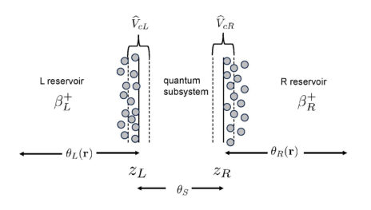
<figcaption class="paper-figure-caption"><b>Fig 1.</b> FIG. 1. Schematic diagram showing the quantum subsystem and reservoir particles (grey filled circles) near the interaction zones. The subsystem is confined to the spatial domain lying between zL and zR, while the reservoirs lie outside this region. The coupling regions where bVcL and bVcR are nonzero are in- dicated by vertical dashed lines. The inverse temperatures of the reservoirs far from the interaction regions are denoted by β+ R,L = 1/kBT + R,L.</figcaption>
</figure>
</div>

<p><strong>Summary.</strong> This paper develops a generalized statistical mechanical framework to study the non-equilibrium thermodynamics of a small quantum system interacting with large quantum reservoirs. It utilizes a local density operator formalism, constrained by measured average observables, to derive exact equations of motion for key quantities like internal energy and entropy production. This provides a powerful theoretical tool for analyzing energy and entropy flow in driven quantum systems.</p>
<p><strong>Why it may be interesting.</strong> This work provides a rigorous, general framework for calculating non-equilibrium quantities like entropy production and energy flow in open quantum systems, which is crucial for understanding quantum thermal machines and energy conversion processes.</p>
<details>
<summary>Detailed structure</summary>
<p><strong>Main problem.</strong> The paper addresses the theoretical description of non-equilibrium dynamics and thermodynamics for a small quantum system coupled to large quantum reservoirs.</p>
<p><strong>Main result.</strong> It derives exact evolution equations for internal energy and entropy production using a local density operator formalism constrained by thermodynamic forces.</p>
<p><strong>Method.</strong> The core method involves constructing a local density operator by maximizing an entropy functional subject to constraints derived from the system's average observables.</p>
<p><strong>Model / system.</strong> The model consists of a small quantum subsystem coupled to large quantum reservoirs, described by a total Hamiltonian $H(\lambda t) = H_S(\lambda t) + V_c + H_R$. The dynamics are governed by the Liouville equation.</p>
<p><strong>Key observables.</strong> Average internal energy, entropy production ($\sigma(t)$), work ($W(t)$), and the local density operators ($\hat{
ho}_L(t)$).</p>
<p><strong>Important parameters / regimes.</strong> External driving protocols ($\lambda t$), reservoir temperatures, and the set of constrained observables $\{A(r)\}$.</p>
<p><strong>Assumptions / limitations.</strong> The formalism assumes that the effects of the subsystem on the reservoirs can be captured via boundary conditions, and certain mode-coupling corrections are neglected.</p>
<p><strong>Figures summary.</strong> Not specified.</p>
<p><strong>Paper structure.</strong> The paper develops the formalism by first defining the local density operator via entropy maximization, then deriving the evolution equations for average fields and energy, and finally presenting appendices detailing the calculation of projected evolution operators and constraint variable dynamics.</p>
</details>
<details>
<summary>Abstract</summary>
<p>A statistical mechanical formulation where nonequilibrium averages of selected quantum observables are given exactly as averages over local density operators is used to describe the dynamics and thermodynamics of a small quantum system coupled to reservoirs. The local density operators are functionals of constraint variables that play the role of thermodynamic forces that satisfy a set of equations of motion. A focus of the work is on the evolution of the average internal energy of the quantum subsystem that may be subject to external autonomous driving that does work on the system, and on entropy production in the system. The nonequilibrium statistical thermodynamics the quantum subsystem coupled to reservoirs, as well as that for the isolated subsystem and reservoirs, are discussed. When the subsystem is coupled to large quantum reservoirs, the effects of the quantum subsystem on the reservoirs can be captured through boundary conditions on the reservoir equations, and these boundary conditions are derived. The formulation is illustrated by considering the heat transfer through a system comprising a quantum system coupled to two heat reservoirs with different temperatures.</p>
</details>
<p><sub><a href="#top">↑ back to top</a></sub></p>

<p><a id="paper-2610.38878"></a></p>
<h3 id="drive-tunable-floquet-exchange-spectroscopy-with-hong-ou-mandel-interference"><a href="http://arxiv.org/abs/2610.38878v1">Drive-tunable Floquet exchange spectroscopy with Hong--Ou--Mandel interference</a></h3>
<p><strong>Authors:</strong> Eric R Bittner<br>
<strong>Type:</strong> theory · <strong>Category:</strong> other · <strong>PDF:</strong> <a href="https://arxiv.org/pdf/2610.38878v1">https://arxiv.org/pdf/2610.38878v1</a><br>
<strong>Analysis basis:</strong> full PDF text, analyzed in chunks
<strong>Topic relevance:</strong> <code>Tavis-Cummings &amp; cavity-many-emitter</code> <strong>3/5</strong> · <code>interference shaping light</code> <strong>3/5</strong> · <code>Full counting statistics</code> <strong>1/5</strong> · <code>analog quantum simulation</code> <strong>1/5</strong> · <code>driven-dissipative phase transition</code> <strong>1/5</strong> · <code>methods for driven-dissipative</code> <strong>1/5</strong> · <code>quantum measurements</code> <strong>1/5</strong></p>
<div class="figure-strip-hint">↔ Scroll figures horizontally</div>
<div class="paper-figures-scroll">
<figure class="paper-figure-card">
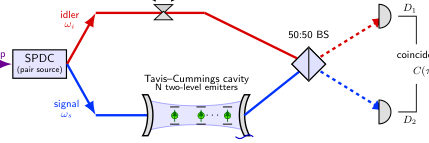
<figcaption class="paper-figure-caption"><b>Fig 1.</b> FIG. 1. Proposed HOM spectroscopy of a Floquet Tavis– Cummings cavity. An SPDC source generates a frequency- entangled signal–idler pair. The signal traverses a collectively coupled cavity–emitter system with cavity frequency modu- lated as ωc(t) = ωc + A sin(Ωt), while the idler acquires a controllable delay τ. Coincidences after the balanced beam splitter measure the exchange overlap of the outgoing pho- tons.</figcaption>
</figure>
<figure class="paper-figure-card">
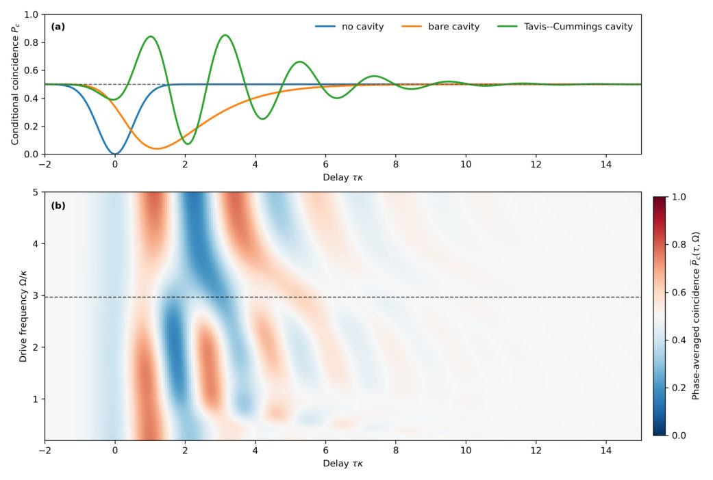
<figcaption class="paper-figure-caption"><b>Fig 2.</b> FIG. 2. Delay-domain and drive-frequency dependence of the same biphoton probe. (a) Conditional HOM interferograms with no cavity, a bare cavity, and a static Tavis–Cummings cavity (A = 0). (b) Phase-averaged conditional coincidence P c(τ, Ω) for the Tavis–Cummings cavity as a function of idler delay and positive drive frequency 0.2 ≤Ω/κ ≤5. The unmodulated Ω= 0 response is shown in (a) and is omitted from the lower map. We use A/κ = 2.385 and the drive convention A sin(Ωt). The color scale is the absolute coincidence probability. The dashed line marks the static polariton splitting ∆pol from Eq. (16).</figcaption>
</figure>
<figure class="paper-figure-card">
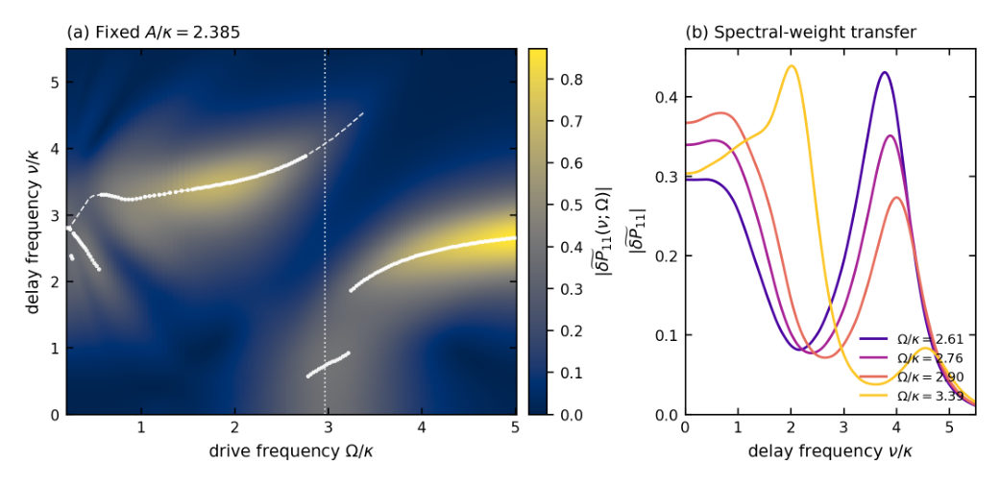
<figcaption class="paper-figure-caption"><b>Fig 3.</b> FIG. 3. Drive-tunable Floquet exchange spectrum at fixed A/κ = 2.385. (a) Magnitude of the Fourier transform of P c(τ)−1/2 versus drive frequency Ωand exchange-beat frequency ν. White markers track the two dominant complementary branches; the vertical dotted line marks the static polariton splitting ∆pol. (b) Selected spectra show the drive-dependent transfer of exchange weight between the branches.</figcaption>
</figure>
<figure class="paper-figure-card">
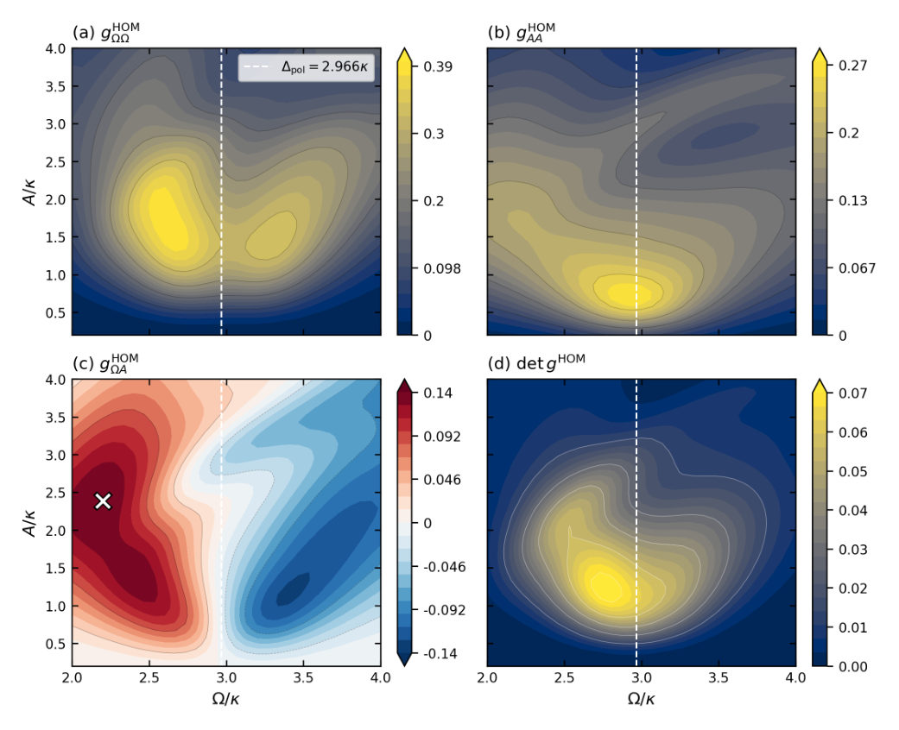
<figcaption class="paper-figure-caption"><b>Fig 4.</b> FIG. 4. Predicted HOM response metric over drive controls (Ω, A). The diagonal components measure the integrated trace response to each control; gΩA measures their alignment, and det g the squared area spanned by the two local responses. The cross in panel (c) marks (Ω, A)/κ = (2.2, 2.385), selected for the phase-sensitive controls in the Supplemental Material.</figcaption>
</figure>
</div>

<p><strong>Summary.</strong> This paper theoretically shows how periodic driving (Floquet engineering) can be used to control and spectroscopically map the two-photon exchange response in a cavity QED system using Hong-Ou-Mandel interference. By analyzing the coincidence rate, the authors reveal tunable exchange branches that provide a richer diagnostic tool than traditional single-photon measurements. This establishes a pathway for actively programming the coincidence spectrum in quantum optical experiments.</p>
<p><strong>Why it may be interesting.</strong> This work is highly relevant to AMO physics and quantum optics as it demonstrates a powerful, non-linear control mechanism (Floquet driving) to engineer and spectroscopically map complex quantum correlations (two-photon exchange) in cavity QED systems.</p>
<details>
<summary>Detailed structure</summary>
<p><strong>Main problem.</strong> The study aims to probe how Floquet driving modifies the two-photon exchange response in a cavity system, a feature not accessible by measuring single-photon sideband populations alone.</p>
<p><strong>Main result.</strong> The research demonstrates that Floquet driving allows for the spectral tuning of the two-photon exchange spectrum, shifting characteristic branches and changing the dominant output order in a way that single-photon measurements cannot replicate.</p>
<p><strong>Method.</strong> The authors theoretically model the system using delay-resolved Hong-Ou-Mandel (HOM) coincidences, analyzing the coincidence rate after Fourier transforming the delay-domain signal.</p>
<p><strong>Model / system.</strong> The system is a collectively coupled cavity, modeled using the Tavis-Cummings framework and subjected to periodic Floquet driving. The analysis involves solving a tridiagonal system describing the cavity field amplitude in the frequency domain.</p>
<p><strong>Key observables.</strong> Delay-resolved Hong-Ou-Mandel (HOM) coincidences, which yield two drive-dependent exchange branches in the Fourier spectrum, and a count-model-dependent Fisher information metric.</p>
<p><strong>Important parameters / regimes.</strong> Drive frequency ($\Omega$), drive amplitude ($A$), cavity detuning, and the time delay ($    au$) between the signal and idler photons.</p>
<p><strong>Assumptions / limitations.</strong> The analysis assumes weak excitation, a single-mode homogeneous collective bright mode, and that the cavity acts linearly on the signal photon, with the two-photon observable arising from final-stage interference.</p>
<p><strong>Figures summary.</strong> Figure 1 proposes the HOM spectroscopy setup. Figure 2 shows the delay-domain and drive-frequency dependence of the biphoton probe. Figure 4 illustrates the predicted HOM response metric over the drive controls ($\Omega, A$).</p>
<p><strong>Paper structure.</strong> The paper establishes the theoretical framework for using HOM interference to measure two-photon exchange. It derives the necessary equations for the coincidence probability, analyzes the spectral features resulting from the drive, and finally maps the tunability using response metrics.</p>
</details>
<details>
<summary>Abstract</summary>
<p>Floquet driving reshapes cavity spectra, but single-photon sideband populations do not reveal how it changes two-photon exchange. Here we show theoretically that delay-resolved Hong--Ou--Mandel (HOM) coincidences can probe this response in a collectively coupled cavity. A frequency-entangled signal photon scatters linearly from the driven cavity while its idler provides a delayed reference. Averaging over an unsynchronized drive phase removes coherence between different net output orders but preserves exchange interference within each order. Fourier transformation of the coincidence trace yields two drive-dependent exchange branches associated with the Floquet-polariton spectrum. As the drive changes, the branches shift and exchange weight; the dominant physical output order also changes, a transfer not reproduced by single-photon sideband populations. We further map the coincidence-trace response over drive frequency and amplitude and connect it to a count-model-dependent Fisher information. Floquet control thus adds a tunable exchange spectrum to HOM interferometry and gives quantitative targets for an experiment.</p>
</details>
<p><sub><a href="#top">↑ back to top</a></sub></p>

<p><a id="paper-2610.40353"></a></p>
<h3 id="multidimensional-revival-dynamics-in-a-bosonic-many-body-system"><a href="http://arxiv.org/abs/2610.40353v1">Multidimensional revival dynamics in a bosonic many-body system</a></h3>
<p><strong>Authors:</strong> Denis Ullmo, Steven Tomsovic, Gabriel M. Lando, Peter Schlagheck<br>
<strong>Type:</strong> theory · <strong>Category:</strong> quantum gases · <strong>PDF:</strong> <a href="https://arxiv.org/pdf/2610.40353v1">https://arxiv.org/pdf/2610.40353v1</a><br>
<strong>Analysis basis:</strong> full PDF text, analyzed in chunks
<strong>Topic relevance:</strong> <code>Keldysh / 2PI / non-Gaussian methods</code> <strong>3/5</strong> · <code>analog quantum simulation</code> <strong>3/5</strong> · <code>scars &amp; prethermalization</code> <strong>3/5</strong> · <code>interference shaping light</code> <strong>1/5</strong> · <code>methods for driven-dissipative</code> <strong>1/5</strong></p>
<div class="figure-strip-hint">↔ Scroll figures horizontally</div>
<div class="paper-figures-scroll">
<figure class="paper-figure-card">
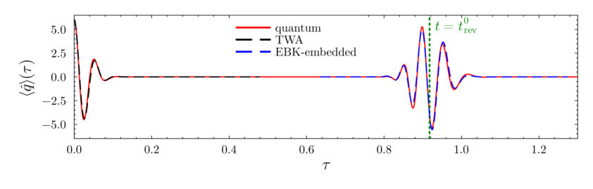
<figcaption class="paper-figure-caption"><b>Fig 1.</b> Figure 1: Mean value of position for the single-site Bose-Hubbard model perturbed by a cubic nonlinearity, Eq. (2.69), as a function of the scaled time τ = t/t0 rev, with t0 rev = 2πℏ/U. The initial state is the coherent state |zα⟩with zα = 6, and the Hamiltonian parameters are ε = 0.005, U = 1. Solid red curve : exact quantum calculation; Dashed black curve (near the origin): TWA approximation Eq. (2.79); Dashed blue curve (near the revival time): EBK-embedded TWA approximation Eq. (2.80). Notice how the revival time in the original system, at τ = 1, is pushed to earlier due to the nonlinear term (dotted green line). When the revival takes place, there is also a visible decrease in the...</figcaption>
</figure>
<figure class="paper-figure-card">
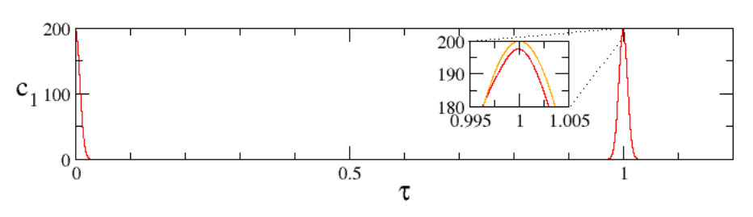
<figcaption class="paper-figure-caption"><b>Fig 2.</b> Figure 2: Coherence on the initially populated site as a function of the scaled time τ = t/t0 rev (t0 rev = 2πℏ/U), calculated for Nα = 200 and γ = 0.14 (red line). As highlighted in the inset, the restoration of coherence at the revival time is nearly 99 percent. A perfect revival of the coherence would be obtained for an isolated-site time evolution, as shown by the dashed orange line in the inset.</figcaption>
</figure>
<figure class="paper-figure-card">
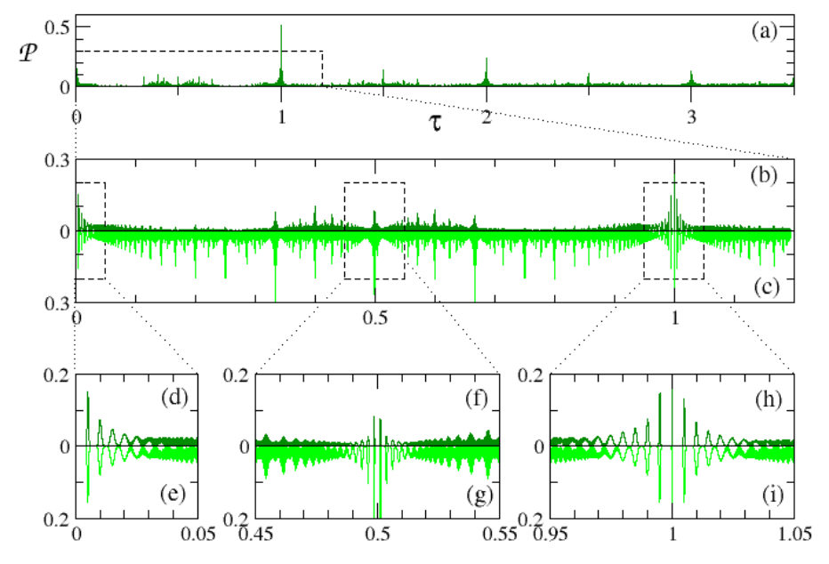
<figcaption class="paper-figure-caption"><b>Fig 3.</b> Figure 3: Return probability to the initial state as a function of the scaled time τ = t/t0 rev, calculated for Nα = 200 and γ = 0.14 (a,b,d,f,h) and compared with the corresponding isolated-site return probability (calculated for γ = 0) (c,e,g,i). The zoomed panels highlight the first collapse of the recurrence oscillations (d,e), the first half-revival near τ = 0.5 (f,g), as well as the first full revival near τ = 1 (h,i).</figcaption>
</figure>
<figure class="paper-figure-card">
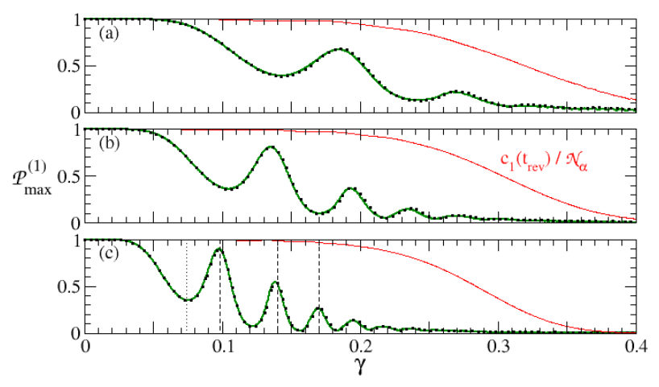
<figcaption class="paper-figure-caption"><b>Fig 4.</b> Figure 4: Maximal value of the revival peak for the renormalized occupied-site coherence (red line) and the return probability to the initial state (green line) as a function of γ, for (a) Nα = 50, (b) Nα = 100, (c) Nα = 200. On panel (c), the dashed lines at γ = 0.098, 0.14, and 0.17 indicate local maxima of the curve associated with the return probability. These maxima are essentially perfectly reproduced by a high order quantum perturbative calculation, indicated by the black dots, which is based on the quantum perturbative framework developed in Appendix Appendix A. Similar, but far smaller variations of the renormalized occupied-site coherence (red line) exist, but are effectively...</figcaption>
</figure>
<figure class="paper-figure-card">
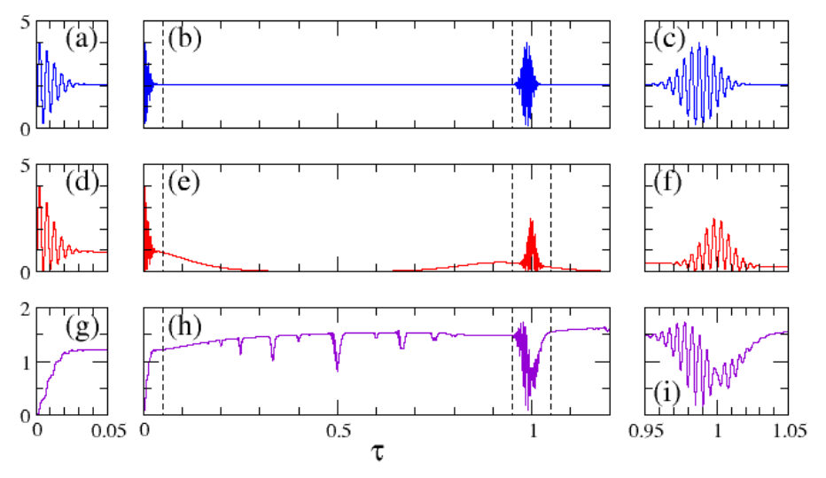
<figcaption class="paper-figure-caption"><b>Fig 5.</b> Figure 5: Signatures of the collapse and revival dynamics on the initially unpopulated site. Panels(a,b,c) show the mean occupancy, panels (d,e,f) show the mean coherence, and panels (g,h,i) show the entanglement entropy between the two sites, plotted as a function of τ = t/t0 rev for Nα = 200 and γ = 0.14. Panels (a,d,g) and (c,f,i) show zooms on the initial collapse and the revival feature, respectively.</figcaption>
</figure>
</div>

<p><strong>Summary.</strong> This paper analyzes quantum revival dynamics in a two-site Bose-Hubbard model, a simple but non-trivial bosonic many-body system. It discovers several complex revival features not seen in 1D systems, such as synchronized resurgence. The key finding is that these phenomena are fully explained by developing and validating a comprehensive semiclassical theory.</p>
<p><strong>Why it may be interesting.</strong> It provides a rigorous theoretical framework for understanding how quantum interference manifests in higher-dimensional, integrable bosonic systems, linking mean-field dynamics to genuine quantum effects.</p>
<details>
<summary>Detailed structure</summary>
<p><strong>Main problem.</strong> Investigating complex quantum revival dynamics in genuinely multidimensional bosonic many-body systems, moving beyond simple 1D models.</p>
<p><strong>Main result.</strong> The study identifies new revival features, including synchronized resurgence and observable-dependent revival times, which are fully explained by a comprehensive semiclassical theory.</p>
<p><strong>Method.</strong> Theoretical derivation using semiclassical methods, quantum perturbation theory, and comparison against full quantum many-body dynamics.</p>
<p><strong>Model / system.</strong> The primary model is the symmetric two-site Bose-Hubbard model (a Bose-Hubbard dimer), which is integrable and serves as the simplest non-trivial bosonic many-body system.</p>
<p><strong>Key observables.</strong> Expectation values, coherences, autocorrelation function, and entanglement behavior.</p>
<p><strong>Important parameters / regimes.</strong> Strongly self-trapping regime, and the comparison between quantum and semiclassical limits.</p>
<p><strong>Assumptions / limitations.</strong> The system is assumed to remain integrable (like the two-site dimer); the semiclassical approach is an approximation valid for small inverse filling factor.</p>
<p><strong>Figures summary.</strong> Not specified.</p>
<p><strong>Paper structure.</strong> The paper reviews 1D revivals, focuses on the Bose-Hubbard dimer dynamics, and develops the theoretical framework by comparing semiclassical predictions with quantum perturbative and exact calculations.</p>
</details>
<details>
<summary>Abstract</summary>
<p>The collapse and revival of localized states in many-body systems is a quintessential example of a quantum interference phenomenon that cannot be explained purely within mean-field theories. Historically, the majority of previous work on quantum revivals has been in a Schrödinger mechanics context, typically for effectively 1D systems with a focus on the autocorrelation function as the key detection observable. The general revival subject acquires a far greater complexity in the bosonic many-body context that offers a larger variety of observables and intrinsically implies high dimensionality. Here, the focus is on the simplest nontrivial (i.e., not 1D) bosonic many-body system, namely a symmetric two-site Bose-Hubbard model. The non-equilibrium situation of a coherent initial state prepared on one of the two sites of this integrable 2D system in the strongly self-trapping regime is considered. The revival behaviors emerging from the resulting dynamics within expectation values, coherences, and the autocorrelation function are theoretically derived, and the entanglement behavior is illustrated. Several new features, unknown so far in the Schrödinger context and identified here in terms of five ``puzzles'', are encountered and discussed, among them, a synchronized resurgence behavior, differing revivals times depending on the specific observable, and a manifestation of a precession that appears in the underlying mean field dynamics. These new phenomena can be entirely understood through a comprehensive semiclassical theory, building upon the underlying classical (mean-field) phase-space structure. A quantitative comparison of the latter with semiclassical predictions and quantum perturbative calculations yields an overall excellent agreement and confirms that a full semiclassical theory is pivotal for the understanding of these genuinely quantum many-body interference phenomena.</p>
</details>
<p><sub><a href="#top">↑ back to top</a></sub></p>

<p><a id="paper-2610.38660"></a></p>
<h3 id="probing-micron-range-fifth-forces-with-cold-atoms-in-optical-tweezer-arrays"><a href="http://arxiv.org/abs/2610.38660v1">Probing micron-range fifth forces with cold atoms in optical tweezer arrays</a></h3>
<p><strong>Authors:</strong> Marios Galanis, Andrew A. Geraci<br>
<strong>Type:</strong> both · <strong>Category:</strong> other · <strong>PDF:</strong> <a href="https://arxiv.org/pdf/2610.38660v1">https://arxiv.org/pdf/2610.38660v1</a><br>
<strong>Analysis basis:</strong> full PDF text, analyzed in chunks
<strong>Topic relevance:</strong> <code>analog quantum simulation</code> <strong>3/5</strong> · <code>quantum measurements</code> <strong>3/5</strong> · <code>quantum optics experiment</code> <strong>2/5</strong> · <code>QC/QI experiment</code> <strong>1/5</strong> · <code>Rydberg arrays</code> <strong>1/5</strong></p>
<div class="figure-strip-hint">↔ Scroll figures horizontally</div>
<div class="paper-figures-scroll">
<figure class="paper-figure-card">
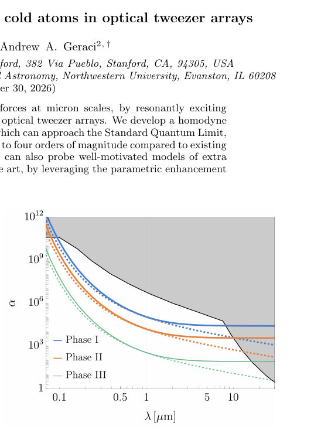
<figcaption class="paper-figure-caption"><b>Fig 1.</b> FIG. 1. 1 σ sensitivity of a 171Yb tweezer array to a reso- nant Yukawa force of strength α and range λ, according to Eq. (4). We assume density contrast ∆ρ = 17 g/cm3, ade- quate cooling 2¯nx + 1 ≈1, 80% readout efficiency, and Ttot = 100 days of incoherent averaging. The source- tweezer distance is d = 900 nm. Parameters for existing technologies (Phase I), near-term capabilities (Phase II), and long-term improvements (Phase III) are given in Ta- ble I below. Optimizing the source periodicity w per λ yields the dashed curves, while choosing its optimal value at 1 µm yields the solid curves. The shaded gray region corresponds to leading laboratory constraints [5, 8], and neutron star...</figcaption>
</figure>
<figure class="paper-figure-card">
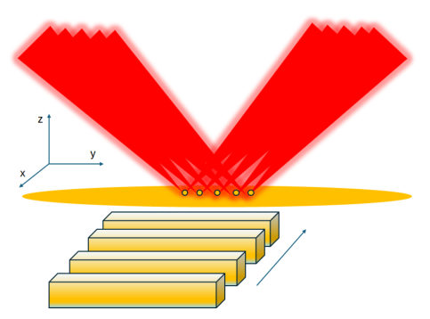
<figcaption class="paper-figure-caption"><b>Fig 2.</b> FIG. 2. Proposed setup. An array of optical tweezers is used to confine a two-dimensional grid of atoms at sub- micron range from a thin metallic reflective surface (only a one-dimensional array is shown). Behind the surface, a periodic array of source masses, such as a high-density- contrast sheet of Au and Si, is translated to produce a force on the atoms due to their gravitational interaction plus any fifth force to be searched for.</figcaption>
</figure>
<figure class="paper-figure-card">
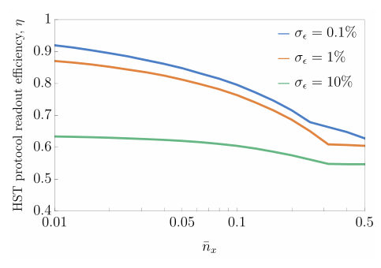
<figcaption class="paper-figure-caption"><b>Fig 3.</b> FIG. 3. Square-root of the ratio of the marginalized Fisher matrix under the homodyne sideband thermometry read- out protocol with respect to the QFI, optimized against the homodyne and Raman pulses, as discussed in App. A. The vertical axis is equal to the readout efficiency η in Eq. (4). We have included a Raman pulse area error σϵ to suppress artificial large-area pulses. The breaking fea- tures at large ¯nx reflect discontinuities in the numerical optimization.</figcaption>
</figure>
</div>

<p><strong>Summary.</strong> This paper proposes a novel, highly sensitive method to search for fifth forces at micron scales using cold atoms trapped in optical tweezer arrays. By employing a quantum-limited homodyne readout protocol, the authors demonstrate a massive improvement in sensitivity, allowing them to probe extra dimensions beyond current experimental capabilities.</p>
<p><strong>Why it may be interesting.</strong> This work is highly relevant as it merges advanced quantum measurement techniques (sideband thermometry, QFI optimization) with fundamental physics searches (fifth forces/extra dimensions) using state-of-the-art AMO platforms (optical tweezer arrays).</p>
<details>
<summary>Detailed structure</summary>
<p><strong>Main problem.</strong> The paper aims to search for deviations from Newton's law (fifth forces) at micron-range distances, which are predicted by theories involving extra spatial dimensions.</p>
<p><strong>Main result.</strong> The proposed method can extend the discovery reach for fifth forces by up to four orders of magnitude compared to existing constraints, surpassing current tabletop limits for extra dimensions.</p>
<p><strong>Method.</strong> The technique involves resonantly exciting the motional state of ground-state-cooled atoms trapped in an optical tweezer array and using a homodyne readout protocol based on sideband thermometry.</p>
<p><strong>Model / system.</strong> The physical system is cold atoms (e.g., $^{171}	ext{Yb}$) confined in an optical tweezer array near a periodic mass source. The theoretical framework models the force deviation using a Yukawa-type potential, and the analysis incorporates concepts from higher-dimensional gravity and Weyl's law.</p>
<p><strong>Key observables.</strong> The primary observable is the sideband asymmetry, $R$, or the Quantum Fisher Information (QFI), which quantifies the measurement sensitivity to the force coupling constant $\alpha$.</p>
<p><strong>Important parameters / regimes.</strong> Micron-range distances ($d \approx 900 	ext{ nm}$), trap frequencies ($
u_x \approx 10  ext{ kHz}$), and the coupling strength $\alpha$ are key parameters.</p>
<p><strong>Assumptions / limitations.</strong> The analysis assumes the measurement can approach the Standard Quantum Limit and utilizes approximations like the Born-Markov equation for decay dynamics.</p>
<p><strong>Figures summary.</strong> Figure 1 illustrates the $1\sigma$ sensitivity of the atomic array to a resonant Yukawa force as a function of source-tweezer distance. Table I provides benchmarks for the fifth force strength $\alpha$ and the size of extra dimensions that can be probed.</p>
<p><strong>Paper structure.</strong> The paper develops the theoretical framework for the force signal, details the advanced homodyne readout protocol using sideband thermometry, calculates the optimal measurement using QFI, and applies this to constrain parameters related to extra dimensions using scaling laws like Weyl's law.</p>
</details>
<details>
<summary>Abstract</summary>
<p>We propose a new method to search for fifth forces at micron scales, by resonantly exciting the motional state of ground-state-cooled atoms in optical tweezer arrays. We develop a homodyne readout protocol based on sideband thermometry, which can approach the Standard Quantum Limit, and expand the discovery reach for fifth forces by up to four orders of magnitude compared to existing constraints. We show that this level of sensitivity can also probe well-motivated models of extra dimensions beyond the current tabletop state of the art, by leveraging the parametric enhancement of higher-dimensional gravity.</p>
</details>
<p><sub><a href="#top">↑ back to top</a></sub></p>

<p><a id="paper-2610.39138"></a></p>
<h3 id="signatures-of-narrowband-and-ultrashort-pulse-like-probing-in-coherent-anti-stokes-raman-scattering-using-twin-beams-and-sum-frequency-generation-readout"><a href="http://arxiv.org/abs/2610.39138v1">Signatures of Narrowband and Ultrashort-Pulse-Like Probing in Coherent Anti-Stokes Raman Scattering Using Twin Beams and Sum-Frequency Generation Readout</a></h3>
<p><strong>Authors:</strong> Yujiro Eto, Hideaki Kano, Masahiro Takeoka<br>
<strong>Type:</strong> theory · <strong>Category:</strong> other · <strong>PDF:</strong> <a href="https://arxiv.org/pdf/2610.39138v1">https://arxiv.org/pdf/2610.39138v1</a><br>
<strong>Analysis basis:</strong> full PDF text, analyzed in chunks
<strong>Topic relevance:</strong> <code>Keldysh / 2PI / non-Gaussian methods</code> <strong>3/5</strong> · <code>interference shaping light</code> <strong>3/5</strong> · <code>methods for driven-dissipative</code> <strong>2/5</strong> · <code>quantum measurements</code> <strong>2/5</strong></p>
<div class="figure-strip-hint">↔ Scroll figures horizontally</div>
<div class="paper-figures-scroll">
<figure class="paper-figure-card">
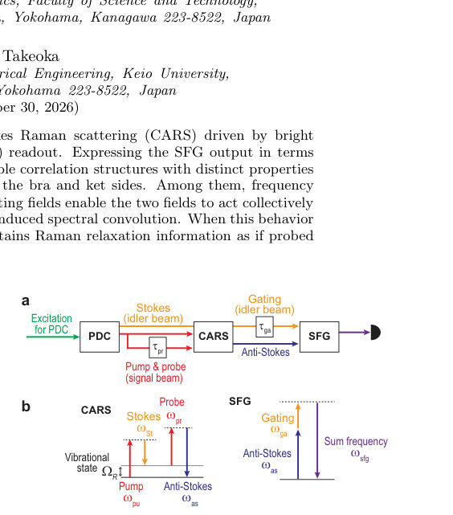
<figcaption class="paper-figure-caption"><b>Fig 1.</b> FIG. 1. (a) Roles of the signal and idler fields gener- ated by parametric down-conversion (PDC) in coherent anti- Stokes Raman scattering (CARS) and sum-frequency gener- ation (SFG). (b) Energy-level diagrams for CARS and SFG.</figcaption>
</figure>
</div>

<p><strong>Summary.</strong> This theoretical paper analyzes CARS measurements using twin beams and SFG readout by treating the output as a quantum correlation function. By decomposing the spectrum into distinct correlation terms, the authors demonstrate that the measurement can yield signatures of both narrowband and ultrashort-pulse probing regimes. This technique offers a powerful method to resolve spectral information while mitigating artifacts from the probing fields.</p>
<p><strong>Why it may be interesting.</strong> This work provides a sophisticated quantum-field theoretical approach to nonlinear spectroscopy, demonstrating how quantum correlations can be engineered to decouple spectral convolution effects, which is highly relevant for advanced quantum optical measurements.</p>
<details>
<summary>Detailed structure</summary>
<p><strong>Main problem.</strong> The study investigates the spectral and temporal signatures of Coherent Anti-Stokes Raman Scattering (CARS) when utilizing bright twin beams and Sum-Frequency Generation (SFG) readout.</p>
<p><strong>Main result.</strong> The analysis shows that frequency correlations between the CARS probe and SFG gating fields allow the fields to act as an effective narrowband probe, while the other field retains information characteristic of ultrashort-pulse probing.</p>
<p><strong>Method.</strong> The SFG output is analyzed by expressing it as a fourth-order quantum-field correlation function and decomposing the total spectrum into multiple pathway-dependent correlation structures.</p>
<p><strong>Model / system.</strong> The system involves CARS driven by twin beams generated via Parametric Down-Conversion (PDC) and read out using SFG. The material response is modeled by a single Lorentzian Raman resonance.</p>
<p><strong>Key observables.</strong> The SFG spectral intensity, $S(\omega_{sfg}, 	au_{pr}, 	au_{ga})$, and its decomposition into contributions like $S_{	ext{diag}}$ and $S_{	ext{off}}$.</p>
<p><strong>Important parameters / regimes.</strong> The time delays ($  au_{pr}$ and $  au_{ga}$) of the probe and gating fields, and the Raman linewidth ($\Gamma$).</p>
<p><strong>Assumptions / limitations.</strong> Dispersive phases accumulated during propagation are neglected, and the PDC process is assumed to be type-0.</p>
<p><strong>Figures summary.</strong> Figure 1 illustrates the roles of signal and idler fields in CARS and SFG, alongside energy-level diagrams for both processes. Table I summarizes the different delta-function products contributing to the correlation terms.</p>
<p><strong>Paper structure.</strong> The paper develops the theoretical framework by expressing the SFG output as a quantum correlation function, decomposes the spectrum into five distinct contributions, and then analyzes specific terms ($S_{	ext{diag}}$ and $S_{	ext{off}}$) to reveal the distinct probing signatures.</p>
</details>
<details>
<summary>Abstract</summary>
<p>We theoretically investigate coherent anti-Stokes Raman scattering (CARS) driven by bright twin beams with sum-frequency generation (SFG) readout. Expressing the SFG output in terms of quantum-field correlation functions yields multiple correlation structures with distinct properties associated with different interaction pathways on the bra and ket sides. Among them, frequency correlations between the CARS probe and SFG gating fields enable the two fields to act collectively as an effective narrowband probe, avoiding probe-induced spectral convolution. When this behavior appears on either the bra or ket side, the other retains Raman relaxation information as if probed by an ultrashort pulse.</p>
</details>
<p><sub><a href="#top">↑ back to top</a></sub></p>

<p><a id="paper-2610.40317"></a></p>
<h3 id="transport-in-spinful-non-hermitian-gauge-lattices"><a href="http://arxiv.org/abs/2610.40317v1">Transport in spinful non-Hermitian gauge lattices</a></h3>
<p><strong>Authors:</strong> Hamed Ghaemi-Dizicheh, Shahram Dehdashti, Janis Nötzel<br>
<strong>Type:</strong> theory · <strong>Category:</strong> other · <strong>PDF:</strong> <a href="https://arxiv.org/pdf/2610.40317v1">https://arxiv.org/pdf/2610.40317v1</a><br>
<strong>Analysis basis:</strong> full PDF text, analyzed in chunks
<strong>Topic relevance:</strong> <code>driven-dissipative phase transition</code> <strong>3/5</strong> · <code>Keldysh / 2PI / non-Gaussian methods</code> <strong>1/5</strong> · <code>analog quantum simulation</code> <strong>1/5</strong> · <code>correlated / nonlocal dissipation</code> <strong>1/5</strong> · <code>interference shaping light</code> <strong>1/5</strong> · <code>methods for driven-dissipative</code> <strong>1/5</strong> · <code>non-equilibrium universality</code> <strong>1/5</strong> · <code>superradiant laser</code> <strong>1/5</strong></p>
<div class="figure-strip-hint">↔ Scroll figures horizontally</div>
<div class="paper-figures-scroll">
<figure class="paper-figure-card">
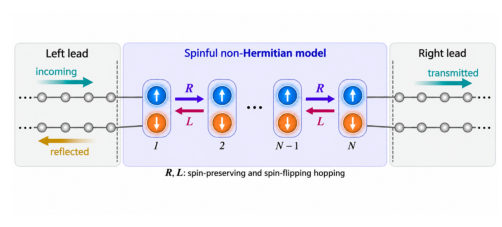
<figcaption class="paper-figure-caption"><b>Fig 1.</b> FIG. 1. Schematic of the transport geometry for the spinful non-Hermitian tight-binding chain. Each physical site n hosts the two-component spinor cn = (cn,+, cn,−)T . The arrows R and L represent the right- and left-directed matrix hoppings t2Tν(ϕ) and t1Tµ(θ), respectively. Since these matrices act on the complete spin doublet, each link generally contains both spin-preserving and spin-flipping hopping amplitudes. The finite sample is connected to spin-degenerate leads, where a state incident from the left generates reflected and transmit- ted components.</figcaption>
</figure>
<figure class="paper-figure-card">
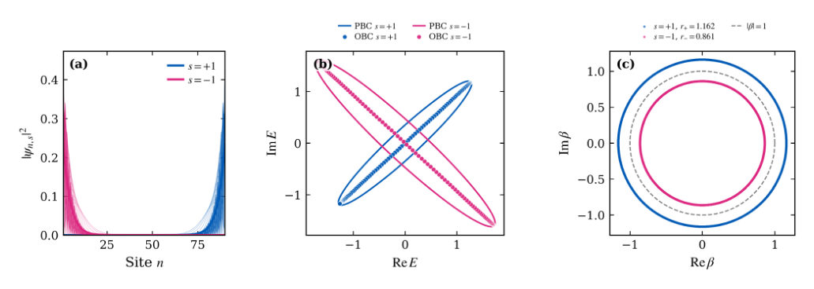
<figcaption class="paper-figure-caption"><b>Fig 2.</b> FIG. 2. Transfer-matrix reproduction of the PBC and OBC spectra and the bipolar NHSE previously reported for the Abelian spinful model in Ref. [39]. All plots are generated using the spin-resolved transfer matrices Ms(E) for N = 90, t1 = t2 = 1, V = 0, µ = ν = z, θ = 0.3i, and ϕ = 1.5. (a) Normalized spatial profiles of the 2N OBC eigenstates. Thin curves represent individual states and thick curves represent the spin-sector averages, showing accumulation of the s = +1 and s = −1 sectors at the right and left boundaries, respectively. (b) PBC spectral loops obtained from det[Ms(E)−eikI2] = 0 and exact finite-chain OBC eigenvalues obtained from [MN s (E)]11 = 0. Colors distinguish the two...</figcaption>
</figure>
<figure class="paper-figure-card">
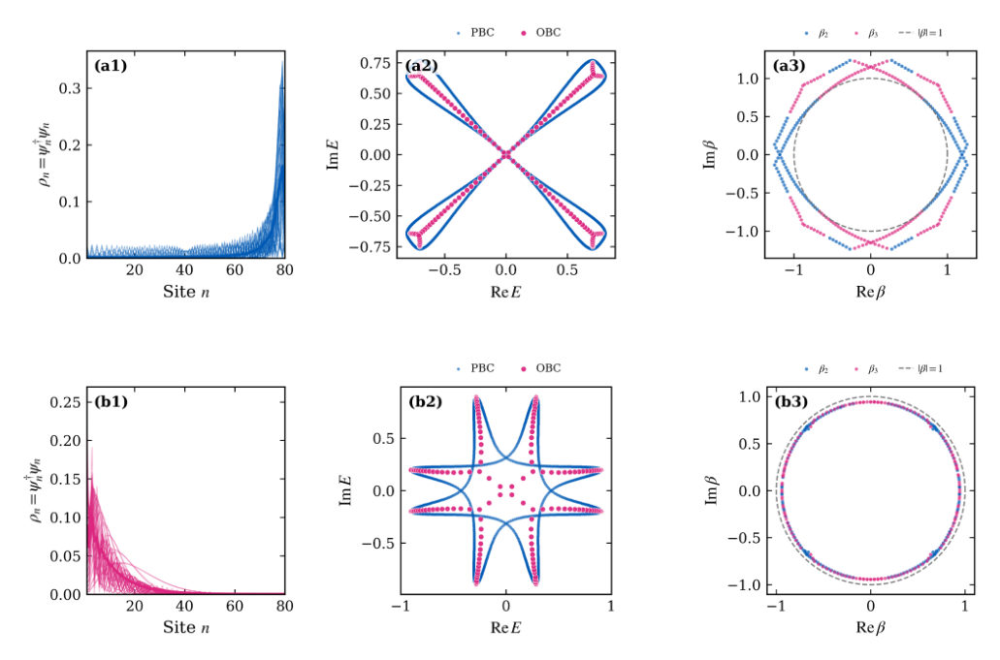
<figcaption class="paper-figure-caption"><b>Fig 3.</b> FIG. 3. Transfer-matrix PBC and OBC spectra, skin profiles, and generalized Brillouin zones of the non-Abelian spinful chain with N = 80, V = 0, R = JReiθRσx, and L = JLeiθLσy. The upper row uses JL = JR = 0.6, θL = 0.5, and θR = −1.5, while the lower row uses JL = 0.7, JR = 0.6, θL = 1.2, and θR = −1.5. (a1,b1) Normalized spin-summed densities of all finite- chain OBC eigenstates; the thick curve is their mean profile. (a2,b2) PBC spectra obtained from det[M(E) −eikI4] = 0 and exact finite-chain OBC eigenvalues obtained from det{[MN(E)]11} = 0. (a3,b3) Non-Abelian GBZs formed by the two middle transfer eigenvalues satisfying |β2| = |β3|; the dashed curve is the unit circle. The two...</figcaption>
</figure>
<figure class="paper-figure-card">
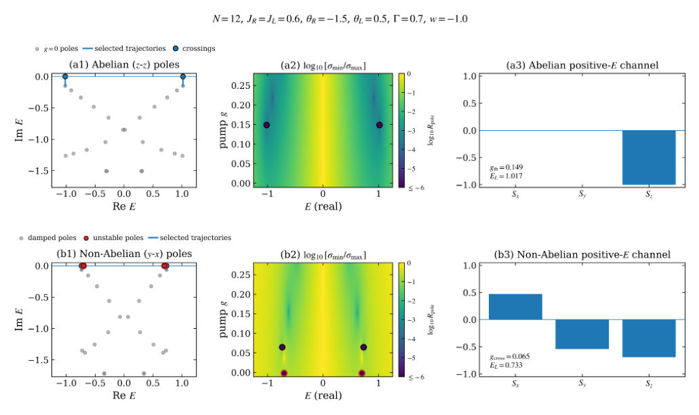
<figcaption class="paper-figure-caption"><b>Fig 4.</b> FIG. 4. Quasibound poles and real-axis outgoing-state crossings obtained from det M22 = 0 for N = 12, JR = JL = 0.6, θR = −1.5, θL = 0.5, Γ = 0.7, and w = −1, with V (g) = −iΓI2 + igI2. The Abelian row uses L = JLeiθLσz and R = JReiθRσz, whereas the non-Abelian row uses L = JLeiθLσy and R = JReiθRσx. (a1,b1) Complete sets of 2N = 24 poles at g = 0, together with the vertical trajectories of the selected pole pairs as g is varied. (a2,b2) Real-axis residual log10 Rpole, with Rpole defined in Eq. (169). Blue dots mark the positive-g crossings of initially damped poles. The red dots in (b2) mark the negative-g crossings of the upper-half-plane poles shown in red in (b1). Plots (a3,b3) show the...</figcaption>
</figure>
<figure class="paper-figure-card">
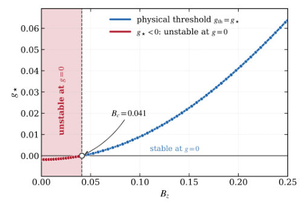
<figcaption class="paper-figure-caption"><b>Fig 5.</b> FIG. 5. Signed real-axis-crossing gain g⋆(Bz) for the non- Abelian chain, calculated from det M22 = 0 with N = 12, JR = JL = 0.6, θR = −1.5, θL = 0.5, Γ = 0.7, and w = −1. Only Bz ≥0 is shown. In the red region, 0 ≤Bz &lt; Bc, the signed quantity is negative because an outgoing pole already lies above the real axis at zero pump; this is not a physical negative-pump threshold. At Bc ≃0.04115 the uppermost pole lies on the real axis. For Bz &gt; Bc, the blue curve gives the physical threshold gth = g⋆&gt; 0. The slope change near Bz ≃0.30 marks a switch in the pole pair determining the first lasing threshold.</figcaption>
</figure>
</div>

<p><strong>Summary.</strong> This paper develops an advanced transfer-matrix method to analyze transport in spinful non-Hermitian lattices with complex gauge couplings. It unifies the description of the bulk spectrum and open-boundary scattering by distinguishing between Abelian and non-Abelian coupling regimes. The results provide clear, measurable criteria for phenomena like spin-hybridized lasing and directional reflectionless transport.</p>
<p><strong>Why it may be interesting.</strong> This work is highly relevant as it bridges spectral properties (skin effect) with measurable transport phenomena (lasing, CPA) in non-Hermitian systems, providing concrete, experimentally accessible signatures like spin conversion.</p>
<details>
<summary>Detailed structure</summary>
<p><strong>Main problem.</strong> To develop a unified framework connecting the non-Bloch spectrum/skin localization (closed chain) with the finite-length transport eigenchannels (open chain) in spinful non-Hermitian lattices.</p>
<p><strong>Main result.</strong> The work establishes that the same transfer matrix determines both the bulk spectrum and the scattering response, revealing distinct signatures for Abelian (spin-dependent skin localization) and non-Abelian (spin-hybridized lasing, CPA) transport regimes.</p>
<p><strong>Method.</strong> The authors extend the generalized transfer-matrix method, deriving a minimal channel-resolved transfer matrix and analyzing its properties in both Abelian and non-Abelian limits.</p>
<p><strong>Model / system.</strong> The model is a one-dimensional spinful non-Hermitian tight-binding lattice incorporating matrix-valued Abelian and non-Abelian gauge couplings.</p>
<p><strong>Key observables.</strong> Generalized Bloch factors, periodic/open-boundary spectra, skin localization, Lasing thresholds, Coherent Perfect Absorption (CPA), Reflectionlessness, Transparency, and Invisibility.</p>
<p><strong>Important parameters / regimes.</strong> Spin polarization, spin conversion, Zeeman field strength, and the nature of the gauge coupling (Abelian vs. non-Abelian).</p>
<p><strong>Assumptions / limitations.</strong> The central advance is connecting the bulk transfer matrix to the scattering properties, and the analysis relies on Schur complement reduction to simplify the propagation dimension.</p>
<p><strong>Figures summary.</strong> The notes mention a schematic of the transport geometry and a table summarizing strong matrix conditions for various boundary-condition-derived transport effects.</p>
<p><strong>Paper structure.</strong> The paper builds from the general transfer-matrix formalism to derive channel-resolved boundary conditions, first analyzing the simpler Abelian limit, and then tackling the complex, coherently mixing non-Abelian gauge field regime.</p>
</details>
<details>
<summary>Abstract</summary>
<p>We extend the generalized transfer-matrix method introduced in [H. Ghaemi-Dizicheh, Phys.\ Rev.\ B \textbf{107}, 125155 (2023)] to one-dimensional spinful non-Hermitian tight-binding lattices with matrix-valued Abelian and non-Abelian gauge couplings. We derive a minimal channel-resolved transfer matrix and identify its eigenvalues with the generalized Bloch factors. The same transfer matrix determines the periodic- and open-boundary spectra, generalized Brillouin zone, skin localization, and finite-sample scattering conditions. In the Abelian limit, the model separates into fixed spin sectors, yielding exact spectral results and closed finite-length transport expressions in terms of Chebyshev polynomials. These results reveal bipolar spin-dependent skin localization and distinguish the reciprocal hopping scale, which governs poles, zeros, and reflectionlessness, from the directed-amplification factor controlling transmission asymmetry, transparency, and invisibility. For non-Abelian gauge fields, noncommuting link matrices coherently mix the spin sectors, such that four transfer eigenmodes jointly determine the non-Bloch spectrum and transport eigenchannels. We show that this mixing produces spin-hybridized lasing and coherent-perfect-absorption channels, Zeeman-tunable lasing thresholds, and direction-dependent reflectionless transport accompanied by pronounced spin conversion. The resulting boundary-condition criteria describe lasing, coherent perfect absorption, reflectionlessness, transparency, and invisibility, while identifying spin polarization and conversion as experimentally accessible signatures that distinguish Abelian from non-Abelian non-Hermitian transport.</p>
</details>
<p><sub><a href="#top">↑ back to top</a></sub></p>

<p><a id="paper-2610.38717"></a></p>
<h3 id="a-primer-on-instanton-physics-a-short-course"><a href="http://arxiv.org/abs/2610.38717v1">A Primer on Instanton Physics - A Short Course</a></h3>
<p><strong>Authors:</strong> Pervez Hoodbhoy<br>
<strong>Type:</strong> theory · <strong>Category:</strong> other · <strong>PDF:</strong> <a href="https://arxiv.org/pdf/2610.38717v1">https://arxiv.org/pdf/2610.38717v1</a><br>
<strong>Analysis basis:</strong> full PDF text, analyzed in chunks
<strong>Topic relevance:</strong> <code>Keldysh / 2PI / non-Gaussian methods</code> <strong>3/5</strong> · <code>analog quantum simulation</code> <strong>1/5</strong> · <code>correlated / nonlocal dissipation</code> <strong>1/5</strong> · <code>driven-dissipative phase transition</code> <strong>1/5</strong> · <code>methods for driven-dissipative</code> <strong>1/5</strong> · <code>non-equilibrium universality</code> <strong>1/5</strong> · <code>quantum measurements</code> <strong>1/5</strong></p>
<div class="figure-strip-hint">↔ Scroll figures horizontally</div>
<div class="paper-figures-scroll">
<figure class="paper-figure-card">
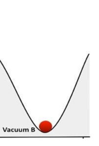
<figcaption class="paper-figure-caption"><b>Fig 1.</b> Figure 1: Decay of false vacuum</figcaption>
</figure>
<figure class="paper-figure-card">
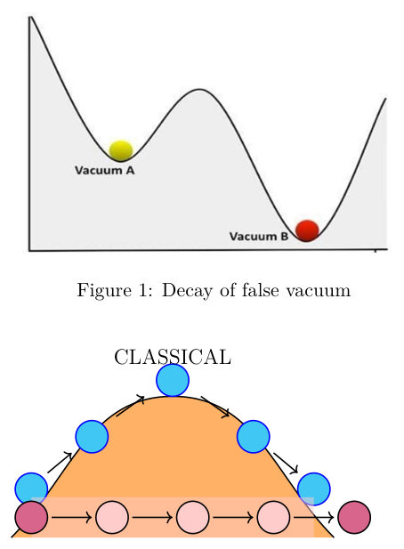
<figcaption class="paper-figure-caption"><b>Fig 2.</b> Figure 2: Classical particle climbing the barrier vs. Quantum particle tunneling through the barrier.</figcaption>
</figure>
<figure class="paper-figure-card">
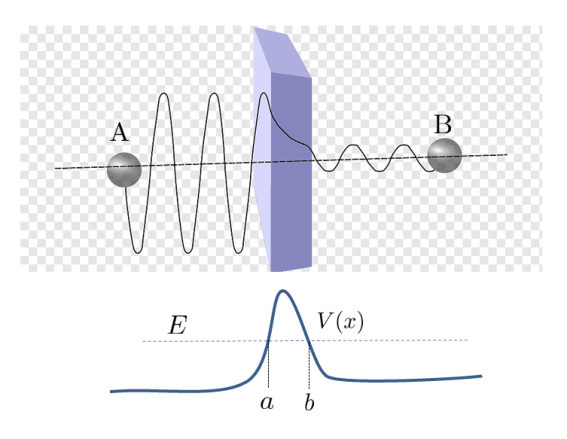
<figcaption class="paper-figure-caption"><b>Fig 3.</b> Figure 3: A visual representation of a wave packet tunneling through a finite potential barrier. Note the exponentially decaying amplitude inside the barrier region.</figcaption>
</figure>
<figure class="paper-figure-card">
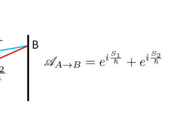
<figcaption class="paper-figure-caption"><b>Fig 4.</b> Figure 4: Double Slit Experiment.</figcaption>
</figure>
<figure class="paper-figure-card">
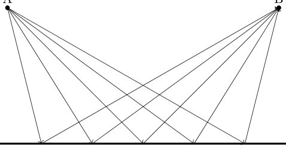
<figcaption class="paper-figure-caption"><b>Fig 5.</b> Figure 7: Reflected light paths. Constructive interference primarily occurs along the path c0 which minimizes travel time (Fermat’s Principle).</figcaption>
</figure>
</div>

<p><strong>Summary.</strong> This course provides a comprehensive theoretical introduction to instanton physics, focusing on calculating non-perturbative quantum tunneling effects. It systematically develops methods using the path integral and functional determinants, applying them to models ranging from simple potentials to complex Yang-Mills theories. The material is crucial for understanding phenomena like vacuum decay and the strong CP problem in QCD.</p>
<p><strong>Why it may be interesting.</strong> The techniques developed for calculating vacuum decay rates and topological susceptibilities (e.g., using functional determinants) are highly relevant for studying non-equilibrium dynamics and tunneling in complex quantum systems, which has parallels in open quantum systems theory.</p>
<details>
<summary>Detailed structure</summary>
<p><strong>Main problem.</strong> The central problem is understanding non-perturbative quantum phenomena like vacuum decay and tunneling, which cannot be treated by standard perturbation theory.</p>
<p><strong>Main result.</strong> The theory develops methods to calculate tunneling amplitudes and vacuum decay rates using instanton solutions and functional determinants, resolving issues like the U(1)A anomaly.</p>
<p><strong>Method.</strong> The primary methods involve the Feynman path integral, WKB approximation, and advanced mathematical tools like the Gel’fand-Yaglom theorem to evaluate functional determinants.</p>
<p><strong>Model / system.</strong> The analysis progresses from the simple double-well potential to general quantum field theory models, including Yang-Mills gauge theories and the Higgs field potential.</p>
<p><strong>Key observables.</strong> Tunneling amplitude (A_A-&gt;B), vacuum decay rate ($\Gamma$), topological charge density ($q(x)$), and the $ heta$ parameter.</p>
<p><strong>Important parameters / regimes.</strong> Planck's constant ($\hbar$), coupling constants ($g$), and the vacuum expectation values defining the potential minima.</p>
<p><strong>Assumptions / limitations.</strong> The path integral requires normalization against a known system, and the calculation of decay rates often relies on the thin-wall approximation or semi-classical WKB assumptions.</p>
<p><strong>Figures summary.</strong> Figures illustrate vacuum decay paths, wave packet tunneling, the structure of the path integral, and the periodic vacuum structure of Yang-Mills theory mediated by instantons.</p>
<p><strong>Paper structure.</strong> The course builds logically: first, basic quantum tunneling via the double-well potential (WKB/Path Integral); second, advanced calculation of fluctuation determinants using the Gel’fand-Yaglom theorem; third, application to QFT, including the O(4) bounce and Yang-Mills instantons; and finally, addressing the U(1)A anomaly and the $ heta$-vacuum.</p>
</details>
<details>
<summary>Abstract</summary>
<p>These six lectures, delivered at the University of New Brunswick 6-21 October 2026, are an introduction to instantons in quantum mechanics and quantum field theory for senior undergraduate and beginning graduate students. The first four lectures deal solely with particle mechanics, building the necessary background for the last two that cover applications in semi-classical field theory.</p>
</details>
<p><sub><a href="#top">↑ back to top</a></sub></p>

<p><a id="paper-2610.40567"></a></p>
<h3 id="algebraic-strong-to-weak-symmetry-breaking-and-partial-decodability-in-the-surface-code"><a href="http://arxiv.org/abs/2610.40567v1">Algebraic strong-to-weak symmetry breaking and partial decodability in the surface code</a></h3>
<p><strong>Authors:</strong> Stephen W. Yan, Yimu Bao, Sagar Vijay<br>
<strong>Type:</strong> theory · <strong>Category:</strong> statistical mechanics · <strong>PDF:</strong> <a href="https://arxiv.org/pdf/2610.40567v1">https://arxiv.org/pdf/2610.40567v1</a><br>
<strong>Analysis basis:</strong> full PDF text, analyzed in chunks
<strong>Topic relevance:</strong> <code>non-equilibrium universality</code> <strong>3/5</strong> · <code>Keldysh / 2PI / non-Gaussian methods</code> <strong>2/5</strong> · <code>analog quantum simulation</code> <strong>1/5</strong> · <code>correlated / nonlocal dissipation</code> <strong>1/5</strong> · <code>driven-dissipative phase transition</code> <strong>1/5</strong> · <code>methods for driven-dissipative</code> <strong>1/5</strong></p>
<div class="figure-strip-hint">↔ Scroll figures horizontally</div>
<div class="paper-figures-scroll">
<figure class="paper-figure-card">
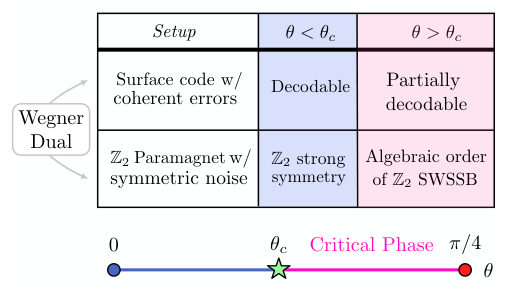
<figcaption class="paper-figure-caption"><b>Fig 1.</b> Figure 2. Main results. In both setups, the coherent rota- tion tunes a phase transition at θc. The critical phase θ &gt; θc exhibits partial decodability and algebraic SWSSB, as sum- marized in the table.</figcaption>
</figure>
<figure class="paper-figure-card">
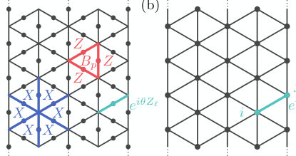
<figcaption class="paper-figure-caption"><b>Fig 2.</b> Figure 1. Setup. (a) Triangular-lattice surface codes with co- herent errors. The code operates on physical qubits on edges and consists of vertex stabilizers Av (blue) and plaquette sta- bilizers Bp (red). The qubits are subject to coherent rotations eiθ P ℓZℓfollowed by syndrome measurements, with their com- bined effect modeled by Eθ. (b) The Wegner dual problem involves qubits on the vertices initialized in the symmetric state |+⟩⊗N. This state is evolved under the strongly sym- metric channel ˜Eθ consisting of two-qubit coherent rotation eiθ P ⟨i,j⟩ZiZj followed by single-qubit Pauli-X measurements.</figcaption>
</figure>
<figure class="paper-figure-card">
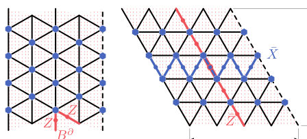
<figcaption class="paper-figure-caption"><b>Fig 3.</b> Figure 3. Triangular-lattice surface code on a cylinder with (a) armchair and (b) zig-zag rough boundaries in the verti- cal direction. Red dotted triangles denote plaquette stabiliz- ers, and blue markers denote vertex stabilizers. The high- lighted incomplete plaquette B∂ p acts on two edge qubits. Panel (b) shows the logical operators X and Z. In our con- vention, the system sizes are (L, T) = (2 √</figcaption>
</figure>
<figure class="paper-figure-card">
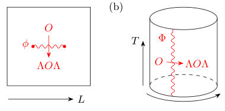
<figcaption class="paper-figure-caption"><b>Fig 4.</b> Figure 4. The Z2-orbifold twist field of the NLσM. Across the defect indicated in red, the field satisfies the twisted bound- ary condition O 7→ΛOΛ. (a) Twist ϕ associated with a bulk defect. This twist is used to compute the fidelity correlator. (b) A large twist defect Φ inserted along the longitudinal di- rection of the cylinder. This twist is related to the fidelity of the surface code decoder.</figcaption>
</figure>
<figure class="paper-figure-card">
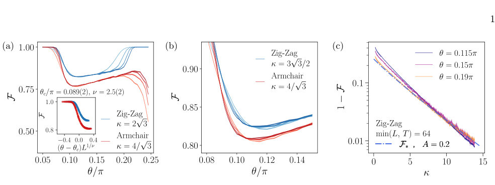
<figcaption class="paper-figure-caption"><b>Fig 5.</b> Figure 5. We plot the decoding fidelity. In (a) and (b), F is plotted against θ fixing κ, with lighter to darker color repre- senting increasing system size L = 8, 16, 24, 32 (L = 8 √</figcaption>
</figure>
</div>

<p><strong>Summary.</strong> This work connects quantum error correction in the surface code to the physics of symmetry breaking in dual spin systems using a nonlinear sigma model. It predicts universal power-law behaviors characterizing a critical, partially decodable phase. This provides a deep theoretical link between quantum information theory and critical phenomena in condensed matter physics.</p>
<p><strong>Why it may be interesting.</strong> The connection between quantum error correction thresholds and critical phenomena/symmetry breaking in statistical mechanics provides a powerful, unified theoretical framework for understanding noise effects in quantum systems.</p>
<details>
<summary>Detailed structure</summary>
<p><strong>Main problem.</strong> The paper investigates unconventional regimes of quantum information recovery and mixed-state order arising from coherent noise, linking quantum error correction transitions to symmetry breaking in dual systems.</p>
<p><strong>Main result.</strong> The transition into a critical phase is characterized by universal power-law decays in fidelity correlators and the emergence of algebraic strong-to-weak spontaneous symmetry breaking (SWSSB).</p>
<p><strong>Method.</strong> The analysis unifies the phenomena using a weakly coupled SO(n) nonlinear sigma model in the replica limit, deriving universal signatures from this field-theoretic description.</p>
<p><strong>Model / system.</strong> The study examines the triangular-lattice surface code under Pauli-Z rotations and its dual, a Z2 paramagnet subjected to decoherence. These are connected via Wegner duality.</p>
<p><strong>Key observables.</strong> Optimal Pauli decoding fidelity, dual fidelity correlator, and correlations of twist operators in the sigma model.</p>
<p><strong>Important parameters / regimes.</strong> The rotation angle (parameterizing the transition), system aspect ratio ($\kappa$), and the replica limit ($n 	o 1$).</p>
<p><strong>Assumptions / limitations.</strong> The analysis relies on the replica trick and the weak-coupling expansion of the nonlinear sigma model.</p>
<p><strong>Figures summary.</strong> Figures illustrate the setup involving the surface code and its dual, and summarize the dependence of decoding fidelity and fidelity correlators on the noise parameter $  heta$.</p>
<p><strong>Paper structure.</strong> The paper establishes the connection between the surface code and the dual paramagnet, develops the common description via the NL$\sigma$M, derives universal scaling laws for the critical phase, and concludes by probing the non-classical nature of the observed symmetry breaking.</p>
</details>
<details>
<summary>Abstract</summary>
<p>Coherent noise can give rise to unconventional regimes of quantum information recovery and mixed-state order. We study these phenomena in two settings related by Wegner duality: the triangular-lattice surface code subject to single-qubit Pauli-$Z$ rotations followed by syndrome measurements, and a $\mathbb{Z}_2$ paramagnet subject to strongly symmetric decoherence. Increasing the rotation angle drives a transition from a decodable phase to a \emph{partially decodable} critical phase in the code, and from a strongly symmetric phase to a phase with \emph{algebraic} $\mathbb{Z}_2$ strong-to-weak spontaneous symmetry breaking (SWSSB) in the dual paramagnet. We develop a common description of these phenomena in terms of a weakly coupled $\mathrm{SO}(n)$ nonlinear sigma model in the replica limit $n\to1$. Taking this replica limit analytically, we derive universal signatures of the critical phase: an optimal Pauli decoding fidelity that approaches a universal function of the system's aspect ratio in the thermodynamic limit, and a dual fidelity correlator that decays as a universal power law. These observables relate to correlations of twist operators in the sigma model description. Large-scale numerical simulations confirm these analytical predictions. We also argue that the algebraic SWSSB phase cannot be realized by any Pauli dephasing channel acting on the $\mathbb{Z}_{2}$ paramagnet. We probe this "non-classical" character through the output state's sensitivity to well-separated $\mathbb{Z}_{2}$ fluxes inserted in the initial state, which reveals persistent coherence between distinct $\mathbb{Z}_{2}$ charge trajectories at long distances.</p>
</details>
<p><sub><a href="#top">↑ back to top</a></sub></p>

<p><a id="paper-2610.40060"></a></p>
<h3 id="dynamical-mean-field-theory-for-associative-memory-with-block-correlated-patterns"><a href="http://arxiv.org/abs/2610.40060v1">Dynamical mean-field theory for associative memory with block-correlated patterns</a></h3>
<p><strong>Authors:</strong> Andrea Callegaris, Yoshiyuki Kabashima<br>
<strong>Type:</strong> theory · <strong>Category:</strong> disordered systems and neural networks · <strong>PDF:</strong> <a href="https://arxiv.org/pdf/2610.40060v1">https://arxiv.org/pdf/2610.40060v1</a><br>
<strong>Analysis basis:</strong> full PDF text, analyzed in chunks
<strong>Topic relevance:</strong> <code>Keldysh / 2PI / non-Gaussian methods</code> <strong>3/5</strong> · <code>methods for driven-dissipative</code> <strong>3/5</strong> · <code>driven-dissipative phase transition</code> <strong>1/5</strong> · <code>non-equilibrium universality</code> <strong>1/5</strong> · <code>quantum measurements</code> <strong>1/5</strong></p>
<div class="figure-strip-hint">↔ Scroll figures horizontally</div>
<div class="paper-figures-scroll">
<figure class="paper-figure-card">
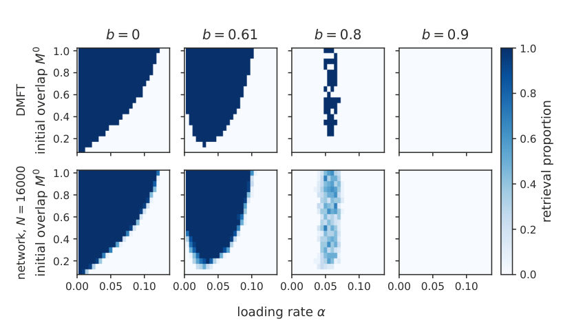
<figcaption class="paper-figure-caption"><b>Fig 1.</b> FIG. 1. Basin of retrieval pattern ξ1,1 according to Eq. (41). Direct-simulation values are retrieval</figcaption>
</figure>
<figure class="paper-figure-card">
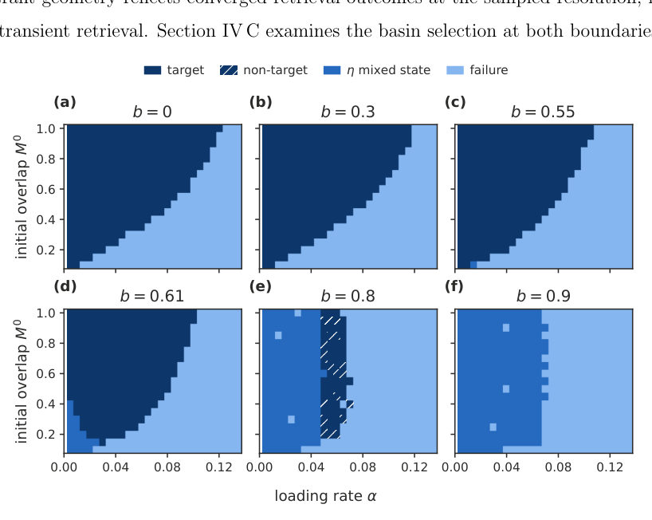
<figcaption class="paper-figure-caption"><b>Fig 2.</b> FIG. 2. DMFT endpoint classes. The symmetric class η is identified by equal descendant overlaps</figcaption>
</figure>
<figure class="paper-figure-card">
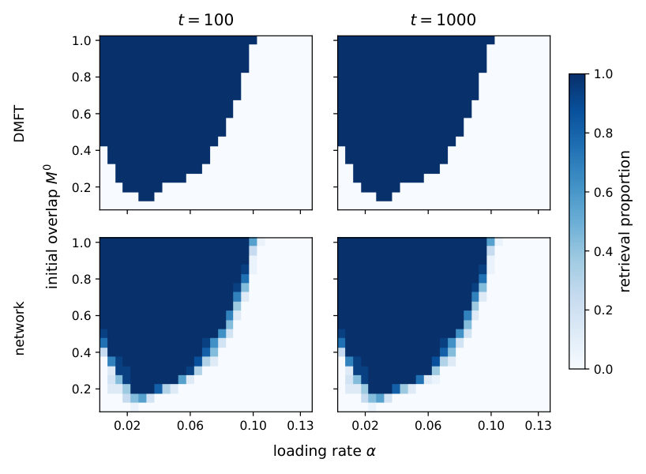
<figcaption class="paper-figure-caption"><b>Fig 3.</b> FIG. 3. Time dependence of the retrieval basin. The same trajectories are classified at both</figcaption>
</figure>
<figure class="paper-figure-card">
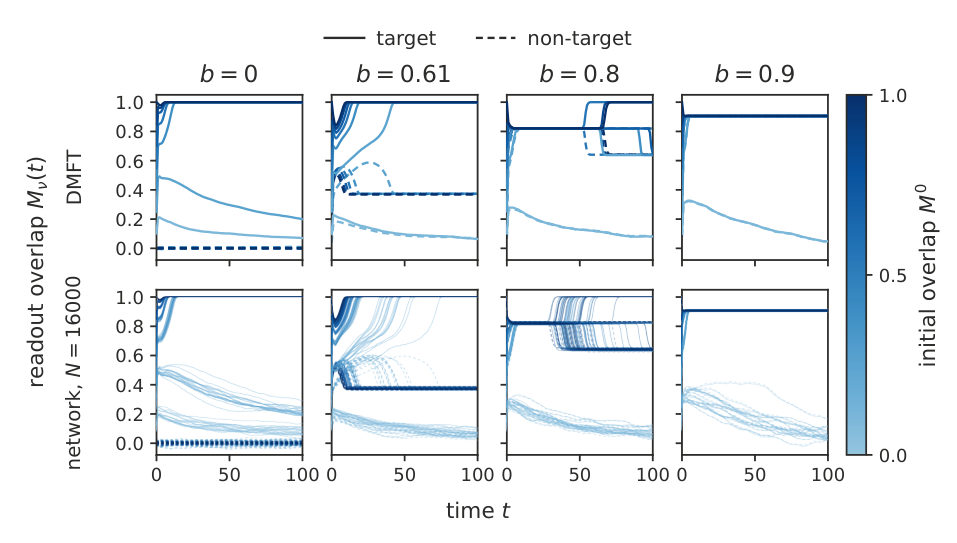
<figcaption class="paper-figure-caption"><b>Fig 4.</b> FIG. 4. Readout trajectories at α = 0.05. Dashed curves give (M2 + M3)/2. Direct simulations</figcaption>
</figure>
<figure class="paper-figure-card">
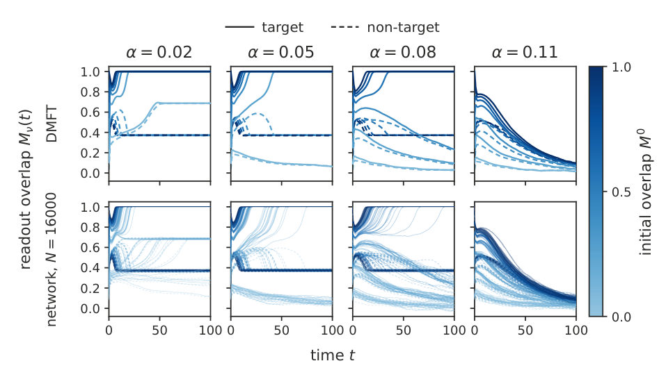
<figcaption class="paper-figure-caption"><b>Fig 5.</b> FIG. 5. Readout trajectories as the loading increases. Dashed curves give (M2 + M3)/2. Direct</figcaption>
</figure>
</div>

<p><strong>Summary.</strong> This paper extends Dynamical Mean-Field Theory (DMFT) to analyze associative memories storing correlated patterns. It determines the dynamics governing the selection between mixed and target retrieval states by deriving self-consistent equations for noise and feedback. The work shows that DMFT accurately predicts the complex retrieval boundaries and trajectories observed in simulations.</p>
<p><strong>Why it may be interesting.</strong> The use of advanced mean-field techniques (DMFT) to analyze complex, non-equilibrium dynamics in a system exhibiting glassy behavior (associative memory) provides theoretical tools applicable to understanding complex many-body dynamics in disordered quantum systems.</p>
<details>
<summary>Detailed structure</summary>
<p><strong>Main problem.</strong> The paper addresses the dynamical selection process among coexisting mixed states and target retrieval states in associative memories that store correlated patterns.</p>
<p><strong>Main result.</strong> The Dynamical Mean-Field Theory (DMFT) successfully reproduces the retrieval trajectories and basin geometry observed in direct simulations, particularly detailing how correlations affect the retrieval boundary.</p>
<p><strong>Method.</strong> The authors extend DMFT, originally for independent patterns, to handle blocks of correlated binary patterns by analyzing the generating functional and deriving self-consistent equations for noise covariance and feedback coefficients.</p>
<p><strong>Model / system.</strong> The system is an associative memory modeled by recurrent neural networks storing correlated binary patterns. The analysis uses the DMFT framework to derive effective single-neuron dynamics.</p>
<p><strong>Key observables.</strong> Output overlaps ($m_
u(t)$, $M_
u(t)$), cross-talk noise covariance ($Q(t, t')$), and self-feedback coefficients ($\Lambda$).</p>
<p><strong>Important parameters / regimes.</strong> Loading rate ($\alpha$), block-covariance eigenvalues ($\lambda_+, \lambda_-$), and the correlation strength ($b$).</p>
<p><strong>Assumptions / limitations.</strong> The analysis assumes the block size $s$ is fixed to $O(1)$ as $N 	o \infty$, and relies on Gaussian limit approximations for disorder averaging.</p>
<p><strong>Figures summary.</strong> Figures illustrate the basin of retrieval patterns, showing the competition between symmetric mixed states and target retrieval, and how the upper boundary shifts based on initial overlap.</p>
<p><strong>Paper structure.</strong> The paper follows a structure of setting up the model, deriving the extended DMFT equations, comparing the theoretical predictions with direct simulations, and summarizing the findings regarding retrieval dynamics.</p>
</details>
<details>
<summary>Abstract</summary>
<p>In associative memories storing correlated patterns, retrieval of individual memories can compete with symmetric mixed states. A dynamical description is needed to determine how the initial state selects between these outcomes. We extend the generating-functional dynamical mean-field theory (DMFT) for independent patterns to independent blocks of correlated binary patterns of fixed finite size. The resulting effective single-neuron process has a self-consistent cross-talk noise covariance and self-feedback coefficients that depend on the block-covariance eigenvalues. For hierarchically correlated patterns with nonmonotonic transfer, increasing the loading can permit retrieval from an imperfect initial state before further loading prevents it. DMFT reproduces the retrieval trajectories and basin geometry found in direct simulations. Near the lower boundary of this re-entrant region, direct networks reveal stationary saddles separating coexisting mixed and target-retrieval states. Parameter sensitivities of DMFT trajectories predict nearby shifts of this boundary. At the tested upper boundary, retrieval remains accessible from initial states with larger target overlap, indicating a change in basin access. Under fixed-point convergence assumptions, the theory recovers the equations of generalized self-consistent signal-to-noise analysis.</p>
</details>
<p><sub><a href="#top">↑ back to top</a></sub></p>

<p><a id="paper-2610.38780"></a></p>
<h3 id="an-eigenvector-continued-greens-function-method"><a href="http://arxiv.org/abs/2610.38780v1">An Eigenvector-Continued Green's Function Method</a></h3>
<p><strong>Authors:</strong> Stefano Brolli, Carlo Barbieri<br>
<strong>Type:</strong> theory · <strong>Category:</strong> strongly correlated electrons · <strong>PDF:</strong> <a href="https://arxiv.org/pdf/2610.38780v1">https://arxiv.org/pdf/2610.38780v1</a><br>
<strong>Analysis basis:</strong> full PDF text, analyzed in chunks
<strong>Topic relevance:</strong> <code>Keldysh / 2PI / non-Gaussian methods</code> <strong>3/5</strong> · <code>methods for driven-dissipative</code> <strong>3/5</strong> · <code>analog quantum simulation</code> <strong>2/5</strong></p>
<div class="figure-strip-hint">↔ Scroll figures horizontally</div>
<div class="paper-figures-scroll">
<figure class="paper-figure-card">
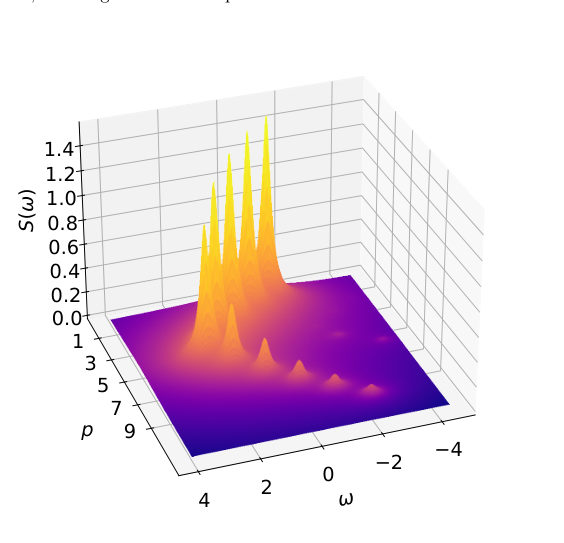
<figcaption class="paper-figure-caption"><b>Fig 1.</b> FIG. 1. Emulated hole spectral-strength distribution for each single-particle level p of the Richardson model at coupling g = 1.3. The peaks were smeared with a Lorentzian of width η = 0.2. The emulation was performed as detailed in the text.</figcaption>
</figure>
<figure class="paper-figure-card">
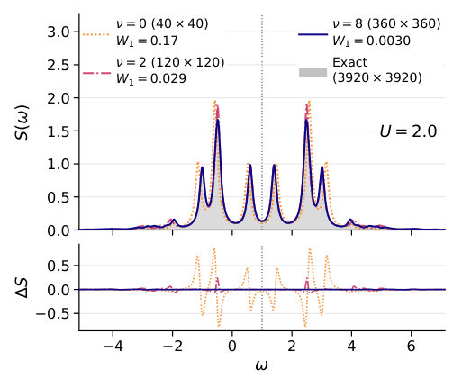
<figcaption class="paper-figure-caption"><b>Fig 2.</b> FIG. 3. spectral-strength distribution of the Hubbard ring for the coupling U = 2.0. The spectral peaks have been widened with a Lorentzian smearing with η = 0.1, and results using ν = 0, 2, and 8 for the emulator are presented. We also report in brackets the dimension of the emulator eigenvalue problem of equation (10) for each ν, together with the W1 distance between exact and emulated spectral distributions. The bot- tom panel shows the difference between emulated and exact distribution. The Fermi energy separating holes and particles is shown as a vertical dotted line.</figcaption>
</figure>
<figure class="paper-figure-card">
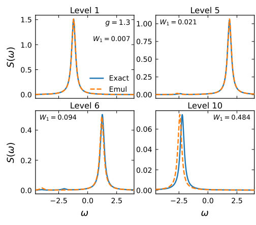
<figcaption class="paper-figure-caption"><b>Fig 3.</b> FIG. 2. Dominant quasihole peaks of the spectral-strength distribution of the Richardson model for the coupling g = 1.3. Note the different scales for the spectral strength on the ver- tical axes. The panels show the levels p = 1, 5, 6, and 10. The plot shows the exact and emulated peaks, with a Lorentzian smearing of width η = 0.2 of the Dirac delta distributions. Each panel also reports the W1 distance of the exact and em- ulated distributions.</figcaption>
</figure>
<figure class="paper-figure-card">
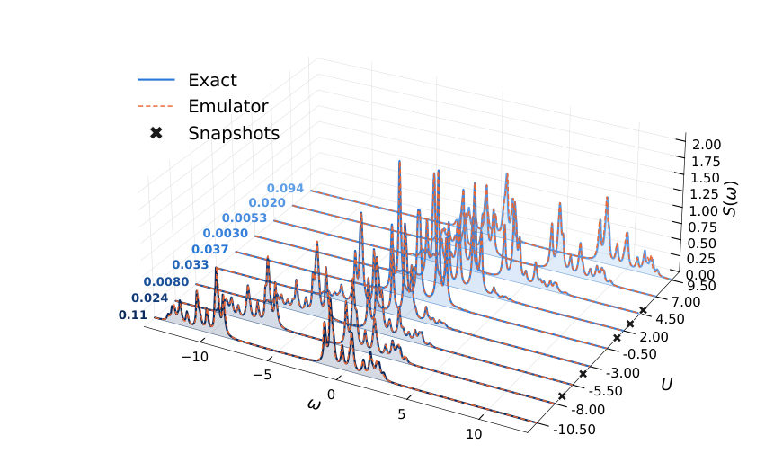
<figcaption class="paper-figure-caption"><b>Fig 4.</b> FIG. 4. Exact and emulated spectral-strength distribution of the Hubbard ring shown for different values of the coupling U. The W1 distance between emulated and exact distributions is shown on the left of each computed distribution.</figcaption>
</figure>
</div>

<p><strong>Summary.</strong> This paper introduces an eigenvector-continued Green's function (ECGF) emulator to overcome the computational bottleneck associated with calculating the full Green's function in many-body physics. By combining eigenvector continuation with moment-matching, the method achieves significant speedups while rigorously preserving key physical observables like the density matrix and spectral moments. It is highly valuable for simulating complex, parameter-dependent quantum models like the Hubbard ring.</p>
<p><strong>Why it may be interesting.</strong> The development of efficient emulators for Green's functions is crucial for simulating complex, parameter-dependent quantum many-body systems, providing a powerful tool for phase diagram mapping and uncertainty quantification in condensed matter theory.</p>
<details>
<summary>Detailed structure</summary>
<p><strong>Main problem.</strong> The challenge lies in emulating the information-rich Green's function for many-body systems while maintaining computational efficiency for repeated evaluations.</p>
<p><strong>Main result.</strong> The proposed eigenvector-continued Green's function (ECGF) emulator accurately reproduces key physical quantities, such as the one-body density matrix and spectral moments, with significantly reduced computational cost compared to exact methods.</p>
<p><strong>Method.</strong> The method constructs an emulator by combining Eigenvector Continuation (EC) with moment-matching techniques, allowing the calculation to be separated into offline (construction) and online (evaluation) stages.</p>
<p><strong>Model / system.</strong> The method is tested on models relevant to strongly correlated systems, including the Richardson model of nuclear pairing and the Hubbard ring model, which exhibit parameter dependence.</p>
<p><strong>Key observables.</strong> Green's function $G_{\alphaeta}(\omega)$, Spectral Strength Distribution $S(\omega)$, One-body Density Matrix $
ho_{aeta}$, and the Wasserstein-1 ($W_1$) distance used for accuracy quantification.</p>
<p><strong>Important parameters / regimes.</strong> Coupling strengths ($g$ or $U$), the order of moment matching ($
u$), and the spectral broadening parameter ($\eta$).</p>
<p><strong>Assumptions / limitations.</strong> The core approximation relies on the accuracy of the eigenvector continuation process, and the diagonal approximation technique sacrifices exact moment-matching across the entire parameter space for linear scaling.</p>
<p><strong>Figures summary.</strong> Figures compare the emulated hole spectral-strength distribution against exact results for the Richardson model and Hubbard ring, quantifying agreement using $W_1$ distances.</p>
<p><strong>Paper structure.</strong> The paper introduces the ECGF emulator, details the underlying mathematical framework involving EC and moment-matching, compares the computational scaling and accuracy of different approximation techniques (Power Grouping vs. Diagonal Approximation), and validates the results on established models like the Hubbard ring.</p>
</details>
<details>
<summary>Abstract</summary>
<p>Emulating the Green's function using reduced-order equations is challenging because of the amount of information it contains. This information includes the one-particle spectroscopy over the entire energy spectrum, the one-body density matrix, and the ground-state energy. Nevertheless, the computational speedup offered by emulators is essential for applications requiring repeated model evaluations, which are ubiquitous in many-body physics. These include parameter calibration, uncertainty quantification, phase-diagram mapping, and geometry optimization. In this Letter, we introduce a systematically improvable emulator based on eigenvector continuation and moment-matching. The resulting approximation, which we refer to as an ``eigenvector-continued Green's function,'' can be obtained by solving linear equations, enabling an efficient separation of the computational workload into offline and online stages.</p>
</details>
<p><sub><a href="#top">↑ back to top</a></sub></p>

<p><a id="paper-2610.40589"></a></p>
<h3 id="collaborative-ai-agents-for-autonomous-experimental-research-with-solid-state-quantum-spins"><a href="http://arxiv.org/abs/2610.40589v1">Collaborative AI agents for autonomous experimental research with solid-state quantum spins</a></h3>
<p><strong>Authors:</strong> El Mustapha Mansouri, Eikichi Kimura, Masato Koga, Keigo Arai<br>
<strong>Type:</strong> both · <strong>Category:</strong> other · <strong>PDF:</strong> <a href="https://arxiv.org/pdf/2610.40589v1">https://arxiv.org/pdf/2610.40589v1</a><br>
<strong>Analysis basis:</strong> full PDF text, analyzed in chunks
<strong>Topic relevance:</strong> <code>QC/QI experiment</code> <strong>3/5</strong> · <code>quantum measurements</code> <strong>3/5</strong> · <code>analog quantum simulation</code> <strong>1/5</strong> · <code>quantum optics experiment</code> <strong>1/5</strong></p>
<div class="figure-strip-hint">↔ Scroll figures horizontally</div>
<div class="paper-figures-scroll">
<figure class="paper-figure-card">

<figcaption class="paper-figure-caption"><b>Fig 1.</b> Figure 1: Scientific workflow and coordination of the collaborative AI laboratory. (a) Five- stage research cycle with checkpoints overseen by the principal investigator (PI). Dotted lines indicate PI involvement; dashed arrows indicate rejection and revision. (b) Specialized AI agents and their exchanges of research outputs, with safety-agent approval required before experimentation. (c) Document flow during one pass through the API-orchestrated workflow, from left to right (not to scale). The orchestrator routes documents to the persistent PI conversation (blue). Dots mark document deliveries, circled ticks and crosses indicate PI decisions, and dashed links trace rejected work. Upper...</figcaption>
</figure>
<figure class="paper-figure-card">
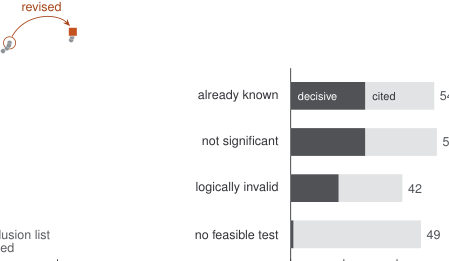
<figcaption class="paper-figure-caption"><b>Fig 2.</b> Figure 2: How the accepted proposal emerged. (a) Every proposal at its delivery time, marked by the PI’s decision. The dashed line marks when the repeatedly rejected idea families were listed in the proposers’ instructions. The ringed proposal was rejected but named the best seed, and its revision was accepted. (b) Reasons for rejecting 75 proposals, in four categories: logically invalid (false or invalid claims, overclaims), already known, not significant (no core theorem, trivial, renamed mathematics, too narrow) and no feasible test. Dark bars count the decisive reason and light bars every reason cited.</figcaption>
</figure>
<figure class="paper-figure-card">
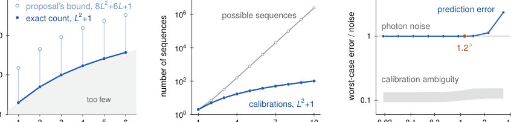
<figcaption class="paper-figure-caption"><b>Fig 3.</b> Figure 3: Discovery and verification of a minimal ensemble-calibration law. (a) The revised proposal supplied an upper bound of 8L2 + 6L + 1 calibrations, which the principal-investigator agent refined to the exact necessary-and-sufficient count L2 + 1 under persistent pulse errors. (b) Calibration requirements compared with the number of possible sequences for five phase choices per pulse, with the first phase fixed. (c) Certified prediction-error and calibration-ambiguity bounds under hidden phase rotations, relative to photon-counting noise.</figcaption>
</figure>
<figure class="paper-figure-card">
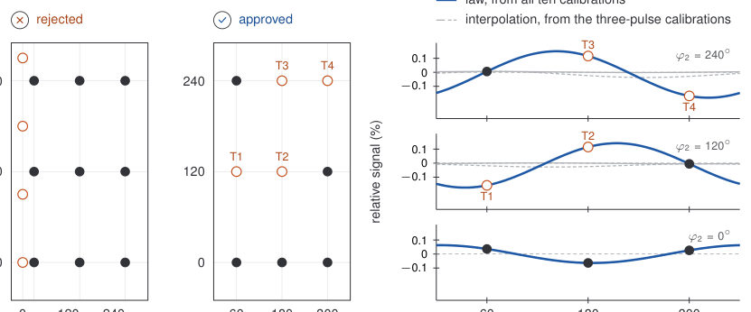
<figcaption class="paper-figure-caption"><b>Fig 4.</b> Figure 4: Experimental design to distinguish the calibration law from interpolation. (a) Rejected design using a complete grid of three-pulse calibrations, from which the withheld targets can already be determined by Fourier interpolation. (b) Revised design combining five three-pulse calibrations with five shorter sequences to predict four withheld targets (T1–T4). Filled symbols indicate calibration sequences and open symbols indicate withheld targets. In both maps, rows give the phase of pulse 2 and columns the phase of pulse 3. Both designs also include the same five shorter calibrations of zero to two pulses, which are not drawn. (c) Measured signals of the final run along each row of...</figcaption>
</figure>
<figure class="paper-figure-card">
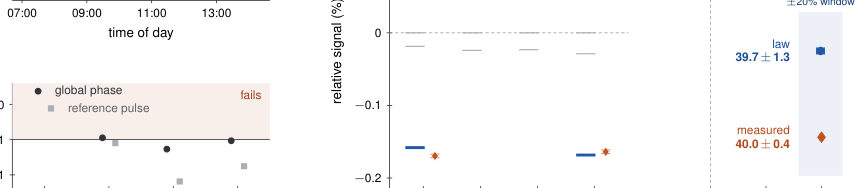
<figcaption class="paper-figure-caption"><b>Fig 5.</b> Figure 5: Critical rejection and experimental support for the AI-derived calibration predictions. (a) Signal of the first run in each 10-min sub-run, in weighted counts per shot, for the two acquisition programs; the dashed line marks 11:48, when the room light came on. (b) The global-phase and reference-pulse checks of each acquisition, as a ratio to their preset limits; checks in the shaded region fail. (c) The four withheld targets, relative to the mean of the five three-pulse calibrations: locked predictions of the calibration law (blue) and of the two interpolation-based rival rules (grey), and the final measurements (orange), whose standard errors are smaller than the symbols. (d) The...</figcaption>
</figure>
</div>

<p><strong>Summary.</strong> This work presents an autonomous research laboratory powered by collaborative AI agents that tackles a problem in quantum spin physics using NV centers in diamond. The agents successfully derived a theoretical minimum for required calibration measurements and then iteratively refined an experimental protocol to validate this theory against real-world signal drift. It demonstrates a powerful paradigm for AI-driven scientific discovery.</p>
<p><strong>Why it may be interesting.</strong> The integration of advanced AI agent frameworks directly into the experimental loop for quantum physics provides a blueprint for accelerating discovery in complex quantum systems, moving beyond simple data analysis.</p>
<details>
<summary>Detailed structure</summary>
<p><strong>Main problem.</strong> Developing an autonomous research laboratory using AI agents to conduct a complete scientific study, while ensuring conclusions are rigorously supported by evidence and experimental validation.</p>
<p><strong>Main result.</strong> Collaborating AI agents successfully selected, challenged, and substantiated a new physical claim regarding quantum spins through iterative theoretical derivation and experimental refinement.</p>
<p><strong>Method.</strong> The study employs a multi-agent system where specialized AI agents (PI, computational researcher, experimentalist) interact to propose, test, and revise hypotheses regarding quantum spin ensembles.</p>
<p><strong>Model / system.</strong> The physical system investigated is an ensemble of nitrogen-vacancy (NV) centers in diamond, whose collective quantum spin response is probed using controlled microwave-pulse sequences.</p>
<p><strong>Key observables.</strong> Signal drift during data collection, calibration ambiguity, and the final measured fluorescence signal supporting the derived calibration law.</p>
<p><strong>Important parameters / regimes.</strong> The minimum number of calibration settings required to predict ensemble responses, which was determined to be $L^2 + 1$ for sequences of length $L$.</p>
<p><strong>Assumptions / limitations.</strong> The core assumption is that the system can be modeled by a law derived from the agents, and that iterative self-correction (e.g., revising protocols after drift) is possible.</p>
<p><strong>Figures summary.</strong> Figure 1 illustrates the scientific workflow and coordination among the various AI roles; Figure 2 details the process of research question selection and rejection by the Principal Investigator agent.</p>
<p><strong>Paper structure.</strong> The paper follows a cycle: agents propose questions $
ightarrow$ theoretical derivation (finding the minimum calibration law) $
ightarrow$ computational verification $
ightarrow$ initial experiment (finding drift) $
ightarrow$ protocol revision $
ightarrow$ final successful experiment supporting the theory.</p>
</details>
<details>
<summary>Abstract</summary>
<p>An autonomous research laboratory could conduct an entire study, from formulating questions to preparing manuscripts. Artificial intelligence (AI) offers one route towards this goal. Recent AI systems take on several research roles, but may draw conclusions that the evidence does not support. Here, we present an autonomous research laboratory in which agents based on large language models assess one another's work and can stop or redirect investigations. They can generate and reject research questions, require separate theoretical checks and conduct experiments designed to challenge their claims. We demonstrate these capabilities by investigating ensembles of quantum spins in diamond. The agents derived the minimum number of calibration settings needed to predict responses to a defined family of microwave pulse sequences. They checked the result computationally and designed experiments to distinguish competing predictions. An initial experiment agreed with the theoretical predictions, but repeated reference measurements showed that the signal was drifting during data collection. The agents therefore treated the result as inconclusive and revised the measurement protocol without relaxing the acceptance criteria. The revised experiment met those criteria and supported the theoretical predictions. This study demonstrates that collaborating AI agents can select research questions, derive theoretical results and test their predictions experimentally.</p>
</details>
<p><sub><a href="#top">↑ back to top</a></sub></p>

<p><a id="paper-2610.39657"></a></p>
<h3 id="detection-and-inhibition-of-decoherence-through-collisions-a-dynamical-approach"><a href="http://arxiv.org/abs/2610.39657v1">Detection and Inhibition of Decoherence Through Collisions: A dynamical approach</a></h3>
<p><strong>Authors:</strong> Sagnik Chakraborty, Srijon Ghosh, Federico Amato, Gniewomir Sarbicki, Dariusz Chruściński, Rosario Lo Franco<br>
<strong>Type:</strong> theory · <strong>Category:</strong> quantum information and computing · <strong>PDF:</strong> <a href="https://arxiv.org/pdf/2610.39657v1">https://arxiv.org/pdf/2610.39657v1</a><br>
<strong>Analysis basis:</strong> full PDF text, analyzed in chunks
<strong>Topic relevance:</strong> <code>methods for driven-dissipative</code> <strong>3/5</strong> · <code>quantum measurements</code> <strong>3/5</strong> · <code>correlated / nonlocal dissipation</code> <strong>1/5</strong> · <code>driven-dissipative phase transition</code> <strong>1/5</strong></p>
<div class="figure-strip-hint">↔ Scroll figures horizontally</div>
<div class="paper-figures-scroll">
<figure class="paper-figure-card">
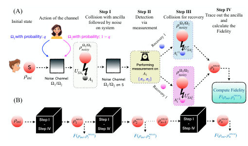
<figcaption class="paper-figure-caption"><b>Fig 1.</b> FIG. 1. Schematic representation of the proposed protocol. (A) is the illustration of a single run of the protocol, and (B) represents the complete protocol after multiple runs.</figcaption>
</figure>
<figure class="paper-figure-card">
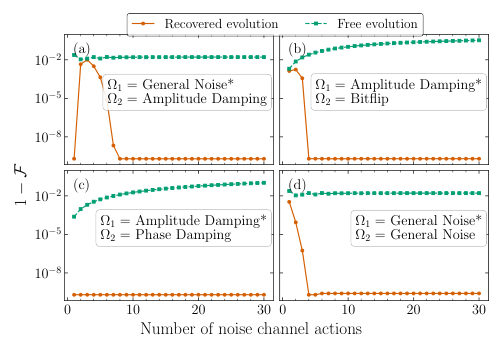
<figcaption class="paper-figure-caption"><b>Fig 2.</b> FIG. 2. Comparison in terms of infidelity between the actual free evolution of a single-qubit quantum state under noise (marked as “ ∗ ”) and the recovered evolution for different noise pairs. a) Noises are general noise and amplitude damping noise. Here γ = 1.0 indicates the strength of the noise, b) O = {Bitflip, Amplitude Damping}, γ = 3.0, c) O = {Amplitude Damping, Phase Damping}, γ = 1.0, and d) Noises are two different instances of general noise, Here we take ∆t = π/100 and g = 1. P = (0.5, 0.5).</figcaption>
</figure>
<figure class="paper-figure-card">
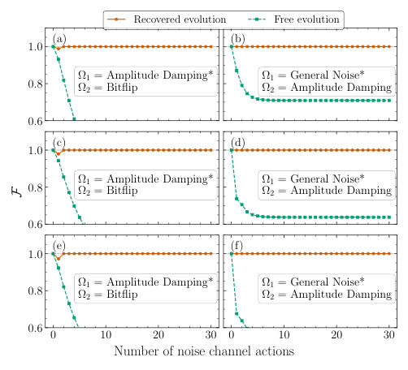
<figcaption class="paper-figure-caption"><b>Fig 3.</b> FIG. 3. Recovery of an N-qubit entangled state in the presence of unknown noise for γ = 10.0. Panels (a) and (b) correspond to the two-qubit case (N = 2), panels (c) and (d) to the three-qubit case (N = 3), and panels (e) and (f) to the four-qubit case (N = 4). All other parameters and simulation details are identical to those used in Fig. 2.</figcaption>
</figure>
<figure class="paper-figure-card">
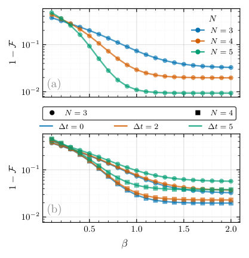
<figcaption class="paper-figure-caption"><b>Fig 4.</b> FIG. 4. Average infidelity 1 −F with respect to the state parameter β of the first recovery collision over a sample of 100 Haar-uniformly generated 4-qubit code space states (∈C). Here, two noise channels are bit-flip channels with γ1 x = γ2 x = 1.0. (a) Illustrates infidelity for different values of N and (b) shows the variation with ∆t. Here w = 0.9.</figcaption>
</figure>
<figure class="paper-figure-card">
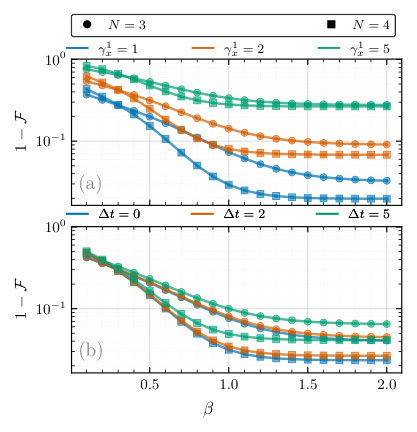
<figcaption class="paper-figure-caption"><b>Fig 5.</b> FIG. 5. Trends of infidelity with β. Unlike Fig. 4, here γ1 x ̸= γ2 x. In (a), γ2 x is fixed at unity, and variation of 1 −F is presented for different values of γ1 x, and the number of qubits N, for ∆t = 0.1. (b) Illustrates the same for different values of ∆t with γ1 x = 1 and γ2 x = 2.</figcaption>
</figure>
</div>

<p><strong>Summary.</strong> This paper introduces a novel, noise-agnostic quantum state protection protocol based on collisional dynamics. It details a detection-and-recovery cycle that allows quantum systems to actively counteract environmental noise without needing full knowledge of the noise process. The framework successfully demonstrates high-fidelity state preservation for single, entangled, and logical qubits.</p>
<p><strong>Why it may be interesting.</strong> This work directly addresses open quantum systems dynamics and quantum error correction, providing a concrete, implementable framework for mitigating decoherence using measurement-based feedback.</p>
<details>
<summary>Detailed structure</summary>
<p><strong>Main problem.</strong> The core challenge is preserving fragile quantum states against environmental noise (decoherence) to enable practical quantum technologies.</p>
<p><strong>Main result.</strong> The proposed collisional model protocol provides robust, noise-agnostic protection for arbitrary single-qubit, entangled, and logical quantum states.</p>
<p><strong>Method.</strong> The protocol uses a detection-and-recovery cycle involving collisions with ancillas, minimum-error discrimination measurements to diagnose noise, and applying the Petz recovery map.</p>
<p><strong>Model / system.</strong> The system involves quantum states (single-qubit, multi-qubit, logical subspaces) interacting with an environment, modeled using a collisional model (CM) framework.</p>
<p><strong>Key observables.</strong> Fidelity (F), which measures state preservation; Infidelity (1-F), which measures deviation from the initial state.</p>
<p><strong>Important parameters / regimes.</strong> Noise strengths ($\gamma_1, \gamma_2$), time evolution ($\Delta t$), and the number of qubits ($N$).</p>
<p><strong>Assumptions / limitations.</strong> The protocol assumes the ability to perform optimal discrimination measurements on the ancilla and that the Petz recovery map can be effectively implemented via collision dynamics.</p>
<p><strong>Figures summary.</strong> Figures illustrate the protocol schematic, showing steps for single and multiple runs, and plot fidelity vs. noise actions, comparing recovered evolution against free evolution.</p>
<p><strong>Paper structure.</strong> The paper develops the protocol by first outlining the general collisional model, detailing the iterative steps of detection and recovery, and then applying this framework to single-qubit, multi-qubit, and logical subspace protection.</p>
</details>
<details>
<summary>Abstract</summary>
<p>Quantum systems are intrinsically fragile and highly vulnerable to environmental noise, making the preservation of quantum states one of the fundamental challenges in realizing practical quantum technologies. We propose two noise-agnostic quantum state protection protocols based on a collisional model. The first protocol preserves quantum states of qubits without requiring complete prior knowledge of the underlying noise dynamics, and the second even protects a logical qubit under similar circumstances. These protocols provide robust protection for arbitrary single-qubit and entangled states against general noise processes. Furthermore, their capability to safeguard quantum states with an arbitrary number of qubits enhances the reliability, robustness, and scalability of emerging quantum architectures. These results establish the proposed framework as a promising approach for practical quantum information processing.</p>
</details>
<p><sub><a href="#top">↑ back to top</a></sub></p>

<p><a id="paper-2610.38675"></a></p>
<h3 id="goldbach-representations-in-quantum-optics-and-metrology"><a href="http://arxiv.org/abs/2610.38675v1">Goldbach Representations in Quantum Optics and Metrology</a></h3>
<p><strong>Authors:</strong> Akira Sone, Maxim Olshanii<br>
<strong>Type:</strong> theory · <strong>Category:</strong> quantum information and computing · <strong>PDF:</strong> <a href="https://arxiv.org/pdf/2610.38675v1">https://arxiv.org/pdf/2610.38675v1</a><br>
<strong>Analysis basis:</strong> full PDF text, analyzed in chunks
<strong>Topic relevance:</strong> <code>Full counting statistics</code> <strong>3/5</strong> · <code>analog quantum simulation</code> <strong>2/5</strong> · <code>quantum measurements</code> <strong>2/5</strong> · <code>interference shaping light</code> <strong>1/5</strong></p>
<div class="figure-strip-hint">↔ Scroll figures horizontally</div>
<div class="paper-figures-scroll">
<figure class="paper-figure-card">
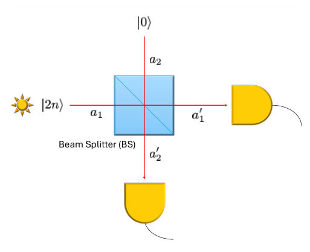
<figcaption class="paper-figure-caption"><b>Fig 1.</b> FIG. 1. Splitting of 2n photons by a stochastic beam split- ter (BS) with a random transmissivity 0 ⩽T ⩽1 uniformly distributed. Here, a1 (a′† 1 ) and a2 (a′† 2 ) denote the input (out- put) field operators for modes 1 and 2, respectively. An even- number Fock state |2n⟩is injected into mode 1, while mode 2 is initialized in the vacuum state |0⟩, resulting in the output state |ψ2n,T ⟩.</figcaption>
</figure>
<figure class="paper-figure-card">
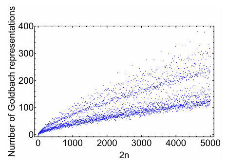
<figcaption class="paper-figure-caption"><b>Fig 2.</b> FIG. 2. Plot of number of Goldbach representations |G2n| for 2n = 4, 6, 8, · · · , 5000.</figcaption>
</figure>
<figure class="paper-figure-card">
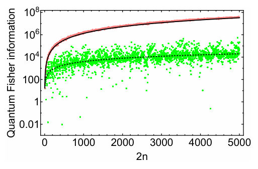
<figcaption class="paper-figure-caption"><b>Fig 3.</b> FIG. 3. Comparison of the QFI of the BS Goldbach state, I(φ) Φ (2n), at T = 1/2, and the equally weighted Gold- bach state, I(φ) Ψ (2n), for 2n = 4, 6, 8, . . . , 5000 in the loga- rithmic scale. The green and pink dots represent I(φ) Φ (2n) and I(φ) Ψ (2n), respectively. The black dashed line shows the asymptotic prediction I(φ) Φ (2n) ∼8n, while the black solid line represents I(φ) Ψ (2n) ∼(16/3)n2. The equally weighted Goldbach state exhibits quadratic QFI scaling, in contrast to the linear scaling of the BS Goldbach state.</figcaption>
</figure>
</div>

<p><strong>Summary.</strong> This paper establishes a novel connection between Goldbach's conjecture and quantum metrology by using photon-number statistics in a beam splitter setup. It shows that the probability of observing a Goldbach representation is measurable and that the ultimate precision limit (QFI) can be engineered to scale between the Standard Quantum Limit and the Heisenberg Limit depending on the quantum state used.</p>
<p><strong>Why it may be interesting.</strong> This work provides a highly non-trivial, concrete quantum-optical realization of a classical number theory conjecture, linking fundamental mathematical structures to the ultimate limits of quantum measurement precision.</p>
<details>
<summary>Detailed structure</summary>
<p><strong>Main problem.</strong> The paper derives a direct, measurable relationship between the arithmetic structure of Goldbach representations (expressing an even number as a sum of two primes) and photon-number statistics in a quantum-optical setup.</p>
<p><strong>Main result.</strong> It shows that the average detection probability is proportional to the number of Goldbach representations, and critically, it demonstrates that the metrological scaling for phase estimation can transition from the Standard Quantum Limit (SQL) to the Heisenberg Limit by altering the quantum state preparation.</p>
<p><strong>Method.</strong> The analysis combines quantum optics formalism (beam splitters, Fock states) with number theory (Hardy-Littlewood asymptotic formula) to calculate the Quantum Fisher Information (QFI) for phase estimation.</p>
<p><strong>Model / system.</strong> The physical model involves injecting an even-number Fock state $|2n\rangle$ into a stochastic beam splitter (BS) with random transmissivity $T$. The output modes are projected onto prime subspaces, mapping the photon statistics to Goldbach representations.</p>
<p><strong>Key observables.</strong> Quantum Fisher Information (QFI), average detection probability $P_{2n}$, and the number of Goldbach representations $|G_{2n}|$.</p>
<p><strong>Important parameters / regimes.</strong> Photon number $2n$, beam splitter transmissivity $T$, and the squeezing parameter $r$ (in later sections).</p>
<p><strong>Assumptions / limitations.</strong> The analysis heavily relies on the Hardy–Littlewood asymptotic formula for estimating the density of Goldbach representations, and various limiting procedures ($n \to \infty$).</p>
<p><strong>Figures summary.</strong> Figures illustrate the scaling of the number of Goldbach representations $|G_{2n}|$ and compare the predicted QFI scaling for different input states.</p>
<p><strong>Paper structure.</strong> The paper first establishes the link between photon counting and Goldbach representations. It then analyzes the QFI for phase estimation using two distinct states: the BS Goldbach state (yielding SQL scaling) and the equally weighted superposition state (yielding Heisenberg scaling).</p>
</details>
<details>
<summary>Abstract</summary>
<p>We derive a relation between Goldbach representations and photon-number statistics in a quantum-optical setup. Considering an even-number Fock state injected into a stochastic beam splitter with uniformly distributed transmissivity and projections of the two output modes onto prime subspaces, we demonstrate that each successful outcome corresponds to an Goldbach representation and that the averaged detection probability is exactly proportional to the number of Goldbach representations. Then, employing the Hardy--Littlewood asymptotic formula, we demonstrate that the post-measurement state generated by a beam splitter with fixed transmissivity exhibits standard quantum limit scaling of the ultimate precision limit in terms of phase estimation, whereas an equally weighted superposition of Goldbach representations exhibits Heisenberg scaling. These results provide a quantum-optical realization of Goldbach representations and relate their statistics of with quantum metrology.</p>
</details>
<p><sub><a href="#top">↑ back to top</a></sub></p>

<p><a id="paper-2610.38844"></a></p>
<h3 id="inferring-the-number-of-quantum-state-transfers-with-neural-networks"><a href="http://arxiv.org/abs/2610.38844v1">Inferring the Number of Quantum State Transfers with Neural Networks</a></h3>
<p><strong>Authors:</strong> Hayden Zammit, Tony J. G. Apollaro, Gianluca Valentino, Johann A. Briffa<br>
<strong>Type:</strong> theory · <strong>Category:</strong> quantum information and computing · <strong>PDF:</strong> <a href="https://arxiv.org/pdf/2610.38844v1">https://arxiv.org/pdf/2610.38844v1</a><br>
<strong>Analysis basis:</strong> full PDF text, analyzed in chunks
<strong>Topic relevance:</strong> <code>methods for driven-dissipative</code> <strong>3/5</strong> · <code>quantum measurements</code> <strong>2/5</strong> · <code>analog quantum simulation</code> <strong>1/5</strong> · <code>correlated / nonlocal dissipation</code> <strong>1/5</strong> · <code>driven-dissipative phase transition</code> <strong>1/5</strong></p>
<div class="figure-strip-hint">↔ Scroll figures horizontally</div>
<div class="paper-figures-scroll">
<figure class="paper-figure-card">

<figcaption class="paper-figure-caption"><b>Fig 1.</b> FIG. 1. The repeated-use QST protocol. Quantum informa- tion held in an n-qubit sender register (red) is transferred, one qubit per use, to an n-qubit receiver register (blue) through a shared spin-chain channel (green) that evolves for a time ti at the ith use and is not reset between uses.</figcaption>
</figure>
<figure class="paper-figure-card">

<figcaption class="paper-figure-caption"><b>Fig 2.</b> FIG. 2. Action of the map Φn,ε on the Bloch ball for the first five uses of the chain. (a) Image of the Bloch ball under the map of each use at ε = 0.18. Each image is a spheroid about the z axis. The transverse semi-axis |f N 1 (t)|An−1 shrinks from use to use, the semi-axis |f N 1 (t)|2 along z is the same for every use, and the centre z0 shifts downward. (b) Sections of the images in the reduced output coordinates (r′ ⊥, r′ z) for ε = 0.05, 0.1, 0.15 and 0.2. The grey semicircle is the boundary of the Bloch ball.</figcaption>
</figure>
<figure class="paper-figure-card">

<figcaption class="paper-figure-caption"><b>Fig 3.</b> FIG. 3. The training grid. Each cell corresponds to a data set with Nt equally spaced timings and Ns states per use and timing, and gives its size Ntot = 5NsNt in thousands. Cells mirrored across the diagonal Ns = Nt contain the same num- ber of examples. For each point in the grid 100 independent realisations of the data set are generated.</figcaption>
</figure>
<figure class="paper-figure-card">

<figcaption class="paper-figure-caption"><b>Fig 4.</b> FIG. 4. Row-normalised confusion matrices of the representative models for the raw (left) and reduced (right) parameterisations, evaluated on the master test set. Entry (i, j) is the fraction of examples of true class i assigned to class j, and class c corresponds to the (c + 1)th use of the chain. The test set contains 105 examples per class, each with a fresh Haar-random input state and a timing offset drawn uniformly from ε ∈[0, 0.2]. Both models are the most typical of the 100 trained at Ns = Nt = 100.</figcaption>
</figure>
<figure class="paper-figure-card">

<figcaption class="paper-figure-caption"><b>Fig 5.</b> FIG. 5. Row-normalised confusion matrices of the same representative models as in Fig. 4, for the raw (left) and reduced (right) parameterisations, averaged over 100 repeated test sets. Each set contains 100 freshly sampled states per use at each of the 99 midpoints of the Nt = 100 training grid, i.e., 9,900 examples per class. The upper number in each cell is the mean over the test sets and the lower number is the standard deviation across them.</figcaption>
</figure>
</div>

<p><strong>Summary.</strong> This work demonstrates that the history of repeated quantum state transfers, which imparts memory to the transmission channel, can be read out using a neural network classifier. By training on input and output Bloch vectors, the network accurately infers the number of uses, showing that exploiting the system's underlying symmetries significantly boosts performance.</p>
<p><strong>Why it may be interesting.</strong> It provides a novel, data-driven method to characterize the history and degradation of an open quantum system (the quantum bus) without needing external measurement or resetting, which is crucial for quantum network resource accounting.</p>
<details>
<summary>Detailed structure</summary>
<p><strong>Main problem.</strong> The paper addresses whether the number of times ($n$) a quantum state transfer (QST) channel has been used, accumulating memory effects, can be inferred solely from the input and output quantum state data.</p>
<p><strong>Main result.</strong> A feed-forward neural network can successfully classify the use number with high accuracy, especially when using a reduced two-component representation exploiting the channel's U(1) symmetry.</p>
<p><strong>Method.</strong> The authors frame the problem as a supervised machine learning task, training a neural network on simulated Bloch vector data from repeated QST operations.</p>
<p><strong>Model / system.</strong> The system is a one-dimensional spin-1/2 chain used for QST. The memory effect causes the channel map to depend on the history of uses, which is modeled by tracking the evolution of the state through the chain.</p>
<p><strong>Key observables.</strong> Classification accuracy (e.g., &gt;95% with reduced coordinates), Earth-Mover Distance on the confusion matrix, and the dependence of accuracy on the product of sampled states and timings.</p>
<p><strong>Important parameters / regimes.</strong> The number of uses ($n$), the transfer time ($t$), the size of the training data ($N_s N_t$), and the systematic timing offset ($\epsilon$).</p>
<p><strong>Assumptions / limitations.</strong> The channel dynamics are restricted to U(1)-symmetric Hamiltonians, and the memory effect is modeled by the accumulated map $\Phi_n$.</p>
<p><strong>Figures summary.</strong> Figures illustrate confusion matrices comparing raw vs. reduced parameterizations, and show the dependence of test accuracy on the product of sampled states and timings.</p>
<p><strong>Paper structure.</strong> The paper first reviews the QST protocol and derives the memory-dependent channel map, then details the classification setup using Bloch vectors, and finally presents the results demonstrating the recoverability of the use number.</p>
</details>
<details>
<summary>Abstract</summary>
<p>Repeated-use quantum state transfer (QST) goes beyond the single-use paradigm by accounting for the memory that accumulates inside the transmission channel when it is not reset between uses. Consequently, the map governing the $n^{\mathrm{th}}$ use of the channel differs from use to use and carries a signature of each previous use. We ask whether this use number can be recovered from transmission data alone, and show that it can: a simple feed-forward neural network, given as input the Bloch vectors sent and received over a single use of an XX spin-chain channel, is able to identify the use number with an accuracy exceeding 90%. Exploiting the U(1) symmetry of the channel, we find that a reduced two-component representation of the transmitted states improves the accuracy further, to about 95%. We characterise the dependence of the classifier on the size and composition of the training data, finding that the number of sampled states and of sampled timings are equally important. We also identify the data set sizes required to reach a given accuracy. Finally, we quantify the severity of the residual misclassifications with an earth-mover distance on the confusion matrix.</p>
</details>
<p><sub><a href="#top">↑ back to top</a></sub></p>

<p><a id="paper-2610.40216"></a></p>
<h3 id="detuning-assisted-cavity-enhancement-in-spectroscopy"><a href="http://arxiv.org/abs/2610.40216v1">Detuning-assisted cavity enhancement in spectroscopy</a></h3>
<p><strong>Authors:</strong> Subhasish Guha, Sourav Das, Francesco Albarelli, Aiman Khan, Elnaz Darsheshdar, Adam D. Wright, Animesh Datta<br>
<strong>Type:</strong> theory · <strong>Category:</strong> other · <strong>PDF:</strong> <a href="https://arxiv.org/pdf/2610.40216v1">https://arxiv.org/pdf/2610.40216v1</a><br>
<strong>Analysis basis:</strong> full PDF text, analyzed in chunks
<strong>Topic relevance:</strong> <code>quantum measurements</code> <strong>3/5</strong> · <code>Tavis-Cummings &amp; cavity-many-emitter</code> <strong>2/5</strong> · <code>Keldysh / 2PI / non-Gaussian methods</code> <strong>1/5</strong> · <code>analog quantum simulation</code> <strong>1/5</strong></p>
<div class="figure-strip-hint">↔ Scroll figures horizontally</div>
<div class="paper-figures-scroll">
<figure class="paper-figure-card">

<figcaption class="paper-figure-caption"><b>Fig 1.</b> Figure 1. Schematic of cavity-enhanced spectroscopy, showing the two types of light probes we consider. In typical mod- els for spectroscopy, continuous-wave monochromatic light probes (a) are considered, and the output light amplitude is modified according to the transmission of the sample. For pulsed single photon probes (b), the sample modifies the shape of the input pulse. K represents the strength of coupling between the input probe light and the cavity mode, whereas g is the interaction strength between the cavity and the two- level atom (TLA). Γ and K⊥represent the losses from the atom and the cavity into the continuum respectively.</figcaption>
</figure>
<figure class="paper-figure-card">

<figcaption class="paper-figure-caption"><b>Fig 2.</b> Figure 2. Transmission spectra T (ω)(top panels) and the dimensionless FI (bottom panels) of photodetection for CEAS including atomic loss (a) Γ = g/100 and (b) Γ = g are plotted against the detuning between the input probe frequency ωin and the cavity frequency, with solid blue and black lines respectively. The dashed blue lines represent the polariton frequencies ϵ±, while the green dash dotted lines and red dotted lines represent the bare frequencies of the cavity and atom respectively. We set K = g/2, K⊥= 0, g = 3.3 × 10−4cm−1 ≈10MHz in these plots.</figcaption>
</figure>
<figure class="paper-figure-card">

<figcaption class="paper-figure-caption"><b>Fig 3.</b> Fig. 2 shows the transmission and the dimensionless FI per photon G2Fp G (ωin) for two different values of the atomic loss Γ and the atom-cavity detuning ∆AC. See Appendix B 1 for analytical expressions. The peaks in the transmission occur at the polariton frequencies  ϵ± = ωC + 1</figcaption>
</figure>
<figure class="paper-figure-card">

<figcaption class="paper-figure-caption"><b>Fig 4.</b> Figure 4. Dimensionless FI of photodetection for CEAS max- imised over all input frequencies ωin is plotted against the atom-cavity detuning and the atomic loss. The red and blue shades correspond to regions in the parameter space where the FI is greater and smaller than the FI at resonance.</figcaption>
</figure>
<figure class="paper-figure-card">

<figcaption class="paper-figure-caption"><b>Fig 5.</b> Figure 3. Dimensionless FI of photodetection for CEAS max- imised over all input frequencies ωin is plotted against the atom-cavity detuning for different values of the atomic loss Γ. The monotonically increasing solid black line corresponds to Γ = 0.</figcaption>
</figure>
</div>

<p><strong>Summary.</strong> This paper theoretically investigates cavity-enhanced spectroscopy, proving that detuning the cavity frequency from the atomic transition can dramatically boost measurement precision. The enhancement, termed Detuning-Assisted Enhancement, is quantified using both classical and quantum Fisher Information metrics. It shows this technique is robust and applicable using standard detection methods.</p>
<p><strong>Why it may be interesting.</strong> This work provides quantitative, rigorous bounds on measurement precision in a fundamental quantum optics setup (cavity QED), showing how detuning can be a powerful tool to overcome limitations inherent at resonance.</p>
<details>
<summary>Detailed structure</summary>
<p><strong>Main problem.</strong> To demonstrate that detuning the cavity frequency from the atomic transition can significantly enhance the precision of dipole moment estimation in cavity-enhanced spectroscopy (CES).</p>
<p><strong>Main result.</strong> Detuning-Assisted Enhancement (DAE) boosts estimation precision by up to two orders of magnitude compared to the resonant case, applicable to both classical and single-photon probes.</p>
<p><strong>Method.</strong> The study employs both semiclassical (Fisher Information) and fully quantum (Quantum Fisher Information) approaches to quantify the enhancement.</p>
<p><strong>Model / system.</strong> The system models a Two-Level Atom (TLA) coupled to a Fabry-Perot cavity, analyzed under both continuous-wave (CW) and pulsed single-photon probing conditions.</p>
<p><strong>Key observables.</strong> Fisher Information (FI) and Quantum Fisher Information (QFI) for dipole moment estimation.</p>
<p><strong>Important parameters / regimes.</strong> Detunings ($\Delta_C, \Delta_{AC}$), cavity loss rate ($K$), atomic loss rate ($\Gamma$), and coupling strength ($g$).</p>
<p><strong>Assumptions / limitations.</strong> The analysis uses the transfer matrix method and assumes the TLA can be mapped to effective single-atom models for ensembles.</p>
<p><strong>Figures summary.</strong> Figures illustrate transmission spectra and dimensionless FI/QFI plots, comparing resonant vs. detuned conditions for both CW and pulsed probes.</p>
<p><strong>Paper structure.</strong> The paper systematically develops the theoretical framework for CES, first addressing the semiclassical CW limit, then moving to the fully quantum single-photon regime, and finally quantifying the enhancement using FI and QFI.</p>
</details>
<details>
<summary>Abstract</summary>
<p>Cavity-enhanced spectroscopy is a widely used experimental technique. We show that detuning the cavity frequency from the transition of interest can enhance the precision for dipole moment estimation by up to two orders of magnitude beyond the improvement when the cavity is resonant with the transition. We show this for both classical continuous-wave (CW) and pulsed single-photon probes, even in the presence of losses. We trace this enhancement to a detuning-controlled redistribution of information between the light- and matter-like polaritons, with losses determining the optimal branch. We show that this enhancement remains accessible using conventional photodetection and time-correlated single-photon counting.</p>
</details>
<p><sub><a href="#top">↑ back to top</a></sub></p>

<p><a id="paper-2610.40416"></a></p>
<h3 id="micromagnetic-lagrangian-and-hamiltonian-normal-mode-formulation-of-cavity-magnon-photon-interactions"><a href="http://arxiv.org/abs/2610.40416v1">Micromagnetic Lagrangian and Hamiltonian Normal-Mode Formulation of Cavity Magnon-Photon Interactions</a></h3>
<p><strong>Authors:</strong> Claudio Serpico, Marco Lembo, Giovanni Miano<br>
<strong>Type:</strong> theory · <strong>Category:</strong> other · <strong>PDF:</strong> <a href="https://arxiv.org/pdf/2610.40416v1">https://arxiv.org/pdf/2610.40416v1</a><br>
<strong>Analysis basis:</strong> full PDF text, analyzed in chunks
<strong>Topic relevance:</strong> <code>analog quantum simulation</code> <strong>3/5</strong> · <code>Keldysh / 2PI / non-Gaussian methods</code> <strong>2/5</strong> · <code>Tavis-Cummings &amp; cavity-many-emitter</code> <strong>2/5</strong></p>
<div class="figure-strip-hint">↔ Scroll figures horizontally</div>
<div class="paper-figures-scroll">
<figure class="paper-figure-card">

<figcaption class="paper-figure-caption"><b>Fig 1.</b> FIG. 1. Schematic geometry (not to scale). The cavity oc- cupies the region V , while the magnetic body occupies the subregion VM ⊂V . The region Vdc contains the stationary sources of the applied dc field. The vector n is the inward unit normal on ∂V , while nM is the outward unit normal on ∂VM.</figcaption>
</figure>
<figure class="paper-figure-card">

<figcaption class="paper-figure-caption"><b>Fig 2.</b> FIG. 2. Cross-section (xz plane, y = b/2) of the WR-187 cavity, with the three disk positions xc=0.2, 1.0, and 2.0 mm, all centered at (yc, zc) = (b/2, L/2). The inset magnifies the black-outlined region (0 ≤x ≤8 mm, 24 ≤z ≤37 mm). The disk normal and the static bias field are along x.</figcaption>
</figure>
<figure class="paper-figure-card">

<figcaption class="paper-figure-caption"><b>Fig 3.</b> FIG. 3. Magnetic field of the TE101 mode (4.00 GHz) in the xz plane of the empty WR-187 cavity. Color represents the normalized magnitude |H1|/Hmax, and the white streamlines show the direction of H1 at an instant of maximum magnetic amplitude. After half a period all directions reverse, while the field-line pattern and the magnitude are unchanged. The open circle marks the magnetic-field node at the cavity center.</figcaption>
</figure>
<figure class="paper-figure-card">

<figcaption class="paper-figure-caption"><b>Fig 4.</b> FIG. 4. First fifteen positive-frequency modes of the branch with nearly uniform dynamic magnetization across the thickness, for µ0Hdc = (319.228 mT) ex (140 × 140 × 1 mesh). Each panel shows the real part of the y component of a mode, with the horizontal and vertical axes along y and z, and the mode frequency below it. The slight splittings within nominally degenerate pairs are due to the discretization.</figcaption>
</figure>
<figure class="paper-figure-card">

<figcaption class="paper-figure-caption"><b>Fig 5.</b> FIG. 5. Frequencies versus dc bias field (140 × 140 × 1 mesh). (a) Fifteen uncoupled magnetic modes. (b) Magnetic modes including the cavity-induced magnetostatic contribution at xc = 0.2 mm, without the direct Zeeman coupling. (c) Full magnon–photon spectrum at the same disk position, with the branches n = 1, 6, 15, 16 in black. The horizontal line in (a) and (b) marks the 4 GHz TE101 frequency.</figcaption>
</figure>
</div>

<p><strong>Summary.</strong> This paper develops a comprehensive theoretical framework to model the interaction between magnons (spin waves) and photons in a resonant cavity. By employing an advanced Lagrangian and Hamiltonian formulation using the electric vector potential, the authors derive canonical polariton variables. This allows for the prediction of key phenomena like mode hybridization and frequency shifts in magnetic polariton systems.</p>
<p><strong>Why it may be interesting.</strong> This work is highly relevant to AMO physics and quantum optics as it provides a rigorous, advanced field-theoretic framework (Lagrangian/Hamiltonian/Bogoliubov) to model strong coupling between two distinct quantum systems: cavity photons and magnons.</p>
<details>
<summary>Detailed structure</summary>
<p><strong>Main problem.</strong> The paper investigates the fundamental physics of magnon-photon interactions within a resonant cavity, aiming to derive a robust theoretical framework for these coupled excitations.</p>
<p><strong>Main result.</strong> The authors successfully derive a canonical polariton basis by diagonalizing the coupled system using a generalized Bogoliubov transformation, predicting hybridization and frequency shifts.</p>
<p><strong>Method.</strong> The methodology involves linearizing coupled Maxwell and Landau-Lifshitz equations, formulating the dynamics via a Lagrangian/Hamiltonian approach using the electric vector potential, and solving the resulting eigenvalue problem.</p>
<p><strong>Model / system.</strong> The system models a ferromagnetic material (e.g., YIG disk) placed inside a microwave cavity, coupling the quantized electromagnetic field (photons) to the collective spin excitations (magnons).</p>
<p><strong>Key observables.</strong> Hybrid collective excitations (magnetic polaritons), radiative magnon-photon coupling strength, and cavity-wall-induced frequency shifts.</p>
<p><strong>Important parameters / regimes.</strong> Gyromagnetic ratio ($\gamma$), exchange stiffness ($A$), anisotropy constant ($K_1$), and the number of retained normal modes ($P$).</p>
<p><strong>Assumptions / limitations.</strong> The formulation assumes the use of the electric vector potential to avoid magnetostatic contribution cancellations, and it relies on linearizing the dynamics around a stable micromagnetic ground state.</p>
<p><strong>Figures summary.</strong> Figure 1 schematically illustrates the geometry of the system, showing the cavity, the magnetic body, and the DC source region.</p>
<p><strong>Paper structure.</strong> The paper progresses from introducing the fundamental coupled field equations (Maxwell and LL) to developing the advanced Lagrangian/Hamiltonian formulation using the vector potential, deriving the normal modes, and finally applying the formalism to a specific YIG cavity system.</p>
</details>
<details>
<summary>Abstract</summary>
<p>We investigate magnon-photon interactions in a resonant cavity starting from the coupled Maxwell and Landau-Lifshitz equations linearized about an arbitrary micromagnetic ground state. By introducing an electric vector potential and a suitable interaction Lagrangian, the formulation avoids the cancellation of large magnetostatic contributions that arises in the conventional magnetic-vector-potential description and becomes inaccurate under modal truncation. The magnetization and cavity fields are expanded in the normal modes of the uncoupled magnetic and electromagnetic subsystems, with coupling coefficients given by overlap integrals of the corresponding eigenfunctions. The resulting multimode Lagrangian has a noncanonical structure due to the gyrotropic terms, and the corresponding Hamiltonian formulation is obtained using the Faddeev-Jackiw approach. The radiative magnon-photon interaction is encoded in the resulting Poisson-bracket structure, while the cavity-induced modification of the magnetostatic field enters explicitly in the Hamiltonian. The coupled system is diagonalized through a generalized Bogoliubov transformation, yielding canonical polariton variables that provide a natural basis for quantization. Application to a perpendicularly magnetized YIG disk in a rectangular microwave cavity shows hybridization between the cavity mode and several magnetostatic modes, together with appreciable cavity-wall-induced frequency shifts when the sample is placed close to the conducting walls.</p>
</details>
<p><sub><a href="#top">↑ back to top</a></sub></p>

<p><a id="paper-2610.40504"></a></p>
<h3 id="using-domain-walls-to-benchmark-fast-quantum-anneals"><a href="http://arxiv.org/abs/2610.40504v1">Using domain walls to benchmark fast quantum anneals</a></h3>
<p><strong>Authors:</strong> Shushmi Chowdhury, Asa Hopkins, Nick Chancellor, Viv Kendon<br>
<strong>Type:</strong> both · <strong>Category:</strong> other · <strong>PDF:</strong> <a href="https://arxiv.org/pdf/2610.40504v1">https://arxiv.org/pdf/2610.40504v1</a><br>
<strong>Analysis basis:</strong> full PDF text, analyzed in chunks
<strong>Topic relevance:</strong> <code>QC/QI experiment</code> <strong>3/5</strong> · <code>analog quantum simulation</code> <strong>3/5</strong> · <code>Frenkel-Kontorova</code> <strong>1/5</strong></p>
<div class="figure-strip-hint">↔ Scroll figures horizontally</div>
<div class="paper-figures-scroll">
<figure class="paper-figure-card">

<figcaption class="paper-figure-caption"><b>Fig 1.</b> FIG. 1. Schematic showing an Ising chain of L = N + 1 spins with twisted boundary conditions imposed by longitu- dinal fields ±h on spins 0 and N + 1, with a single domain wall between spin sites N −1 and N. The N possible domain wall positions are labeled above and the N + 1 spins are la- beled below. Ferromagnetic coupling strengths J are applied between neighboring spins.</figcaption>
</figure>
<figure class="paper-figure-card">

<figcaption class="paper-figure-caption"><b>Fig 2.</b> FIG. 2. Illustration of the expected domain wall distribu- tions for classical (top row) and quantum (bottom row) ideal (left) and with random fields (right) frustrated spin chains in their ground states (single domain wall).</figcaption>
</figure>
<figure class="paper-figure-card">

<figcaption class="paper-figure-caption"><b>Fig 3.</b> FIG. 3. Outline of the experimental settings on the D- Wave quantum annealer. Problem instances are submitted using both the standard anneal protocol with an anneal time of 20 µs, and the fast anneal protocol with times of 0.005 µs, 0.01 µs, 0.03 µs, and 20 µs. In the fast anneal protocol, a flux bias is applied since non-zero local fields (hi) cannot be directly specified. A chain length of L = 10 was used in the standard protocol with 562 chains embedded across the available hardware qubits, and L = 12 in the fast anneal protocol with 468 chains embedded. Due to maximum QPU run time constraint per submission, the 10 000 were divided into four batches.</figcaption>
</figure>
<figure class="paper-figure-card">

<figcaption class="paper-figure-caption"><b>Fig 4.</b> FIG. 4. Probability distribution from the fast anneal proto- col averaged over 468 chains for a chain length of 12 with 104 runs for different anneal times. The data have been post selected to only show single domain wall instances. On average across 468 chains per run the single domain wall count is 7072.9 ± 11.2 for 0.005 µs, 9119.4 ± 17.4 for 0.01 µs, 9960.9 ± 26.7 for 0.03 µs, and 9762.9 ± 21.3 for 20 µs (see table II). Error bars represent the uncertainty obtained by combining in quadrature the propagated binomial uncertainty from finite domain wall occurrences and the standard error of the mean across chains.</figcaption>
</figure>
<figure class="paper-figure-card">

<figcaption class="paper-figure-caption"><b>Fig 5.</b> Figure 4 shows the domain wall distributions for anneal times of 0.005 µs, 0.01 µs, 0.03 µs and 20 µs. We observe a fair approximation of the sine-squared particle-in-a-box profile at 0.01 µs. This behavior was anticipated in [17], but short enough anneal times were not available then. The profiles at longer times of 0.03 µs and 20 µs show the emergence of the U-shape after thermalization that was reported in [17]. The fastest anneal runs, 0.005 µs yield a slightly skewed M-shaped profile, U-shaped in the middle with turned down ends. This is quite distinct from the U-shape produced after thermalization in the 0.03 µs and 20 µs profiles. It is more consistent with the domain wall not having...</figcaption>
</figure>
</div>

<p><strong>Summary.</strong> This work uses the behavior of domain walls in frustrated Ising spin chains to benchmark the performance of fast quantum annealers. By comparing the observed distribution profiles to theoretical predictions for quantum, classical, and disordered regimes, the authors propose using the domain wall tail length as a robust, hardware-independent metric for quantifying coherence and noise in quantum computation.</p>
<p><strong>Why it may be interesting.</strong> The study provides a concrete, measurable diagnostic tool (domain wall tail length) derived from fundamental many-body physics to assess the performance and coherence of near-term quantum hardware.</p>
<details>
<summary>Detailed structure</summary>
<p><strong>Main problem.</strong> The paper benchmarks fast quantum annealers by analyzing the distribution of domain walls in frustrated 1D Ising spin chains.</p>
<p><strong>Main result.</strong> The tail length of the domain wall distribution in the fast anneal regime is proposed as a platform-independent metric to characterize both coherence time and noise levels.</p>
<p><strong>Method.</strong> The authors compare theoretical predictions (sine-squared vs. U-shaped) with experimental measurements on a D-Wave quantum annealer, analyzing how the annealing speed affects the observed distribution.</p>
<p><strong>Model / system.</strong> The system is a frustrated 1D Ising spin chain with anti-parallel boundary spins, modeled by a time-dependent Hamiltonian. The analysis focuses on the distribution of domain walls arising in the ground state.</p>
<p><strong>Key observables.</strong> Domain wall distribution profile, tail length of the distribution, total and single domain wall occurrence counts.</p>
<p><strong>Important parameters / regimes.</strong> Annealing time (fast vs. standard), coupling strength (J), disorder strength ($\zeta$), and temperature/thermalization regime ($eta$).</p>
<p><strong>Assumptions / limitations.</strong> The metric relies on the domain wall behaving as an effective quantum particle in the coherent regime, and the analysis distinguishes between thermalized and coherent dynamics.</p>
<p><strong>Figures summary.</strong> Figures illustrate schematic domain wall distributions for ideal quantum/classical cases and those with random fields. Later figures show probability distributions of domain walls for various anneal times and hardware settings.</p>
<p><strong>Paper structure.</strong> The paper progresses from establishing the theoretical expectation for domain wall distributions (ideal vs. random fields) to applying this concept to the D-Wave hardware, comparing results across different annealing speeds and analyzing systematic hardware effects like gauge dependence.</p>
</details>
<details>
<summary>Abstract</summary>
<p>We consider the distribution of domain walls arising in ground states of frustrated 1-dimensional Ising spin chains with anti-parallel boundary spins. For ideal chains, a sine-squared particle-in-a-box distribution of domain walls is expected in the quantum setting, and a uniform distribution expected classically. However, for chains with random imperfections, prior work [Chancellor et al., npj Quantum Inf. 8, 73, 2022] found that the distribution in a physical implementation corresponded to neither. Instead, the domain wall distribution forms a U-shaped profile arising from a classical model with random fields, where the combination of averaging over these fields and thermal averaging produces the characteristic U-shape. With D-Wave's newer fast anneal feature, we access anneal times shorter than the coherence time and observe the expected coherent quantum behavior in the form of a sine-squared distribution. For the shortest available anneal time, the dynamics have not yet reached the sine-squared shape and instead display a different U-shape in the middle of the chains. This motivates using the extent of the domain wall distribution tail in this regime as a platform independent metric that provides a signature of both coherence time and noise levels.</p>
</details>
<p><sub><a href="#top">↑ back to top</a></sub></p>

<p><a id="paper-2610.40141"></a></p>
<h3 id="distributed-inner-product-estimation-for-continuous-variable-quantum-states"><a href="http://arxiv.org/abs/2610.40141v1">Distributed Inner-Product Estimation for Continuous-Variable Quantum States</a></h3>
<p><strong>Authors:</strong> Jun Tang, Congcong Zheng, Xutao Yu, Zaichen Zhang<br>
<strong>Type:</strong> theory · <strong>Category:</strong> quantum information and computing · <strong>PDF:</strong> <a href="https://arxiv.org/pdf/2610.40141v1">https://arxiv.org/pdf/2610.40141v1</a><br>
<strong>Analysis basis:</strong> full PDF text, analyzed in chunks
<strong>Topic relevance:</strong> <code>quantum measurements</code> <strong>3/5</strong> · <code>quantum optics experiment</code> <strong>3/5</strong></p>
<div class="figure-strip-hint">↔ Scroll figures horizontally</div>
<div class="paper-figures-scroll">
<figure class="paper-figure-card">

<figcaption class="paper-figure-caption"><b>Fig 1.</b> FIG. 1. Schematic workflow for continuous-variable distributed inner-product estimation (CV-DIPE). Platform A prepares the state described by ρ, and platform B prepares the state described by σ. For each shared phase setting θi, i = 1, . . . , Nθ, each platform performs n local homodyne measurements, with each measurement producing an M-dimensional outcome vector. The corresponding records are denoted by {x(1) i , . . . , x(n) i } and {y(1) i , . . . , y(n) i }. Classical post-processing of these records yields an unbiased estimator of the truncated inner product, satisfying E[ efR(ρ, σ)] = fR(ρ, σ). Here, R is the truncation radius, and the expectation is taken over the randomly sampled...</figcaption>
</figure>
<figure class="paper-figure-card">

<figcaption class="paper-figure-caption"><b>Fig 2.</b> FIG. 2. Truncation radius dependence for a same-state coherent-product benchmark |α⟩⊗2, with α = 0.6 + 0.2i, M = 2 modes, mean energy per mode ¯E = |α|2 = 0.4, and n = 10 shots per state per setting. (a) The MSE is evaluated as the analytic |f(ρ, σ) −fR(ρ, σ)|2 plus the sample variance estimating Var( efR(ρ, σ)), as in Eq. (37), at Nθ = 800 shared phase settings. The truncation radius is selected using 80 repetitions, and the curves use 80 independent validation repetitions on the truncation radius grid fixed before validation. The square, circle, and diamond mark R∗ G = 4.44, R∗ emp = 3.05, and R∗ E = 4.04, respectively. R∗ G and R∗ E are defined in Eqs. (41) and (39). (b) The direct...</figcaption>
</figure>
<figure class="paper-figure-card">

<figcaption class="paper-figure-caption"><b>Fig 3.</b> Fig. 2(a) shows opposite trends in the two error components as the truncation radius increases. The squared truncation bias falls from order unity to below 10−6, whereas the empirical variance increases from below 10−6 to above 10−2. Consequently, the MSE is nonmonotonic. The selection data give R∗ emp = 3.05, at which the independently evaluated MSE decomposition is approximately 1.4 × 10−3. The two radii, R∗ E = 4.04 and R∗ G = 4.44, defined in Eqs. (39) and (41), both lie on the variance-dominated branch. These choices of radius are conservative because they minimize the uniform upper bounds for the respective state classes in Eqs. (38) and (40), rather than the actual MSE of the present...</figcaption>
</figure>
<figure class="paper-figure-card">

<figcaption class="paper-figure-caption"><b>Fig 4.</b> Fig. 2(b) compares the dependence of the MSE on Nθ at three fixed truncation radii. For R = 2.0, the MSE remains near 6 × 10−2 as Nθ increases from 100 to 800. For R = 4.5, it decreases from approximately 8 × 10−2 to 8 × 10−3, but remains above the result obtained at R∗ emp. At R∗ emp = 3.05, the MSE decreases from approximately 7 × 10−3 to 1.1 × 10−3 and approximately follows the displayed T −1 tot reference over the tested range of Nθ.</figcaption>
</figure>
<figure class="paper-figure-card">

<figcaption class="paper-figure-caption"><b>Fig 5.</b> FIG. 3. Finite-sample MSE versus mode number and mean energy per mode for same-state comparisons with f(ρ, σ) = 1. (a) MSE versus the mode number M = 1, 2, 3, 4 at fixed mean energy per mode ¯E = 1. (b) MSE versus ¯E = 0.5, 1.0, 1.5, 2.0, 2.5 at fixed M = 2. The benchmarks are coherent states NM ℓ=1 |αℓ⟩with |αℓ|2 = ¯E; squeezed-vacuum states [S(ξ)|0⟩]⊗M with ξ ≥0 and sinh2 ξ = ¯E; Fock states NM ℓ=1 |mℓ⟩with P</figcaption>
</figure>
</div>

<p><strong>Summary.</strong> This paper develops a protocol to estimate the inner product between two unknown continuous-variable quantum states prepared on separate, distributed platforms using only local homodyne measurements. By analyzing the required measurement resources, the authors provide explicit sample complexity bounds, showing how the required data scales differently for general versus Gaussian states, which is vital for experimental quantum networking.</p>
<p><strong>Why it may be interesting.</strong> This work provides a concrete, resource-efficient protocol for quantum state verification and benchmarking in CV quantum optics, which is highly relevant for experimental quantum information science.</p>
<details>
<summary>Detailed structure</summary>
<p><strong>Main problem.</strong> The paper addresses Distributed Inner-Product Estimation (DIPE) for continuous-variable (CV) quantum states, which is crucial for benchmarking state preparations across independent quantum platforms.</p>
<p><strong>Main result.</strong> They derive finite-sample guarantees for estimating the inner product using only local homodyne measurements and classical communication, providing distinct scaling laws for general and Gaussian states.</p>
<p><strong>Method.</strong> The estimation relies on approximating the infinite-dimensional inner product integral via truncation in phase space, followed by constructing an unbiased estimator based on multiple independent homodyne measurement settings.</p>
<p><strong>Model / system.</strong> The system involves multimode bosonic CV quantum states, whose properties are analyzed using their characteristic functions and covariance matrices, measured via local homodyne detection.</p>
<p><strong>Key observables.</strong> The inner product $    ext{Tr}(
ho\sigma)$, the truncated inner product $f_R(
ho, \sigma)$, and the characteristic functions $\chi_
ho(u)$ and $\chi_\sigma(u)$.</p>
<p><strong>Important parameters / regimes.</strong> Truncation radius $R$, number of measurement settings $N_	heta$, number of local shots $n$, and the mean energy bound $E$.</p>
<p><strong>Assumptions / limitations.</strong> The analysis assumes a known bound on the mean energy per mode ($E$) and relies on truncating the infinite phase-space integral to control the estimation error.</p>
<p><strong>Figures summary.</strong> Figure 1 schematically illustrates the workflow where two independent platforms perform local homodyne measurements at shared phases, followed by classical post-processing to estimate the truncated inner product.</p>
<p><strong>Paper structure.</strong> The paper builds from defining the DIPE problem for CV states, establishing the measurement protocol using homodyne data to estimate the characteristic function product, and finally deriving rigorous sample complexity bounds by analyzing the bias (truncation error) and variance separately for general and Gaussian states.</p>
</details>
<details>
<summary>Abstract</summary>
<p>Distributed inner product estimation (DIPE) is a fundamental task in quantum information, aiming to estimate the inner product between two unknown quantum states prepared on distributed quantum platforms. For multimode continuous-variable (CV) systems, the infinite-dimensional Hilbert space poses an additional challenge. In this work, we develop a CV-DIPE protocol using only local homodyne measurements at shared phase settings and classical communication. Under a known bound on the mean energy per mode, we derive explicit finite-sample guarantees and sufficient copy counts for estimating the full inner product to prescribed accuracy and confidence. The energy constraint yields an inverse-square truncation-bias bound, while Gaussian structure strengthens the tail control to exponential decay and improves the resulting accuracy scaling. Numerical simulations with Gaussian and non-Gaussian states illustrate the balance between truncation bias and statistical error and its dependence on mode number and energy. Our results enable independent CV platforms to benchmark their state preparations against one another, even when neither state admits a tractable classical description.</p>
</details>
<p><sub><a href="#top">↑ back to top</a></sub></p>

<p><a id="paper-2610.38885"></a></p>
<h3 id="execution-bias-repeatability-and-mitigation-cost-in-parameter-frozen-molecular-vqe-energy-evaluation"><a href="http://arxiv.org/abs/2610.38885v1">Execution bias, repeatability and mitigation cost in parameter-frozen molecular VQE energy evaluation</a></h3>
<p><strong>Authors:</strong> Julen Larrucea<br>
<strong>Type:</strong> experiment · <strong>Category:</strong> other · <strong>PDF:</strong> <a href="https://arxiv.org/pdf/2610.38885v1">https://arxiv.org/pdf/2610.38885v1</a><br>
<strong>Analysis basis:</strong> full PDF text, analyzed in chunks
<strong>Topic relevance:</strong> <code>QC/QI experiment</code> <strong>3/5</strong> · <code>quantum measurements</code> <strong>3/5</strong></p>
<div class="figure-strip-hint">↔ Scroll figures horizontally</div>
<div class="paper-figures-scroll">
<figure class="paper-figure-card">

<figcaption class="paper-figure-caption"><b>Fig 1.</b> Figure 1: (a) Aachen pilot O2 energy ladder relative to full-space F: A is the exact active reference, V the frozen ideal energy, black links the active-space and ansatz contributions, and colored arrows the execution residual Y −V . Raw is a three-job mean and each mitigation estimate is one PUB; cancellation reduces |Y −F| from 256 to 236 mHa under TREX even as |Y −V | grows. (b) Start times show the O2 subset of each isolated window on Aachen and Pittsburgh; each complete device window has 14 jobs over 6.5–9.8 min. Window gaps are omitted, order was fixed, and BeH2 had no ZNE arm.</figcaption>
</figure>
<figure class="paper-figure-card">

<figcaption class="paper-figure-caption"><b>Fig 2.</b> Figure 2: Individual isolated residuals Y −V on (a) Aachen and (b) Pittsburgh, with returned Estimator standard errors s. Markers identify Raw 1024, Raw 4096, TREX and the ZNE package; black crosses show the calibration prediction Pprod from Eq. (2) averaged over matching windows. The signed logarithmic scale is linear within ±0.3 mHa. Raw 1024 has six jobs per system and device; other supported cells have three, with BeH2 ZNE unmeasured.</figcaption>
</figure>
<figure class="paper-figure-card">

<figcaption class="paper-figure-caption"><b>Fig 3.</b> Figure 3: Within-window and between-window moment SD components for six Raw 1024 jobs in three windows, compared with mean returned uncertainty ¯s. Negative between-window moment variance estimates are displayed at zero with hatching and an open downward marker. The between-window component has two degrees of freedom; the within-window component has three.</figcaption>
</figure>
<figure class="paper-figure-card">

<figcaption class="paper-figure-caption"><b>Fig 4.</b> Figure 4: Signed residual changes from V relative to each window’s mean Raw 1024 bracket versus charge relative to one Raw 1024 job of the same system and backend. Colors identify systems, filled markers Aachen and open markers Pittsburgh; diamonds, squares and triangles identify Raw 4096, TREX and the ZNE package. Positive changes raise the signed residual; a negative change can still increase absolute error if the estimate crosses V . Each cell contributes three window points; per-cell and absolute-reduction views appear in Figs. S11 and S8.</figcaption>
</figure>
</div>

<p><strong>Summary.</strong> This work rigorously tests the accuracy of molecular energy calculations using VQE on real quantum hardware, comparing raw measurements against advanced error mitigation techniques. The findings demonstrate that while mitigation methods significantly reduce noise, the results highlight that hardware noise and execution bias remain dominant error sources that require careful workload checking before drawing strong physical conclusions.</p>
<p><strong>Why it may be interesting.</strong> It provides a crucial, practical assessment of the noise floor and the efficacy of current error mitigation protocols (ZNE, TREX) when applying quantum computation to fundamental molecular physics problems.</p>
<details>
<summary>Detailed structure</summary>
<p><strong>Main problem.</strong> The paper addresses the ambiguity in interpreting quantum energy measurements, specifically determining if a small statistical error bar implies true accuracy when evaluating molecular energies using VQE on noisy quantum hardware.</p>
<p><strong>Main result.</strong> Raw measurements show significant execution error, but error mitigation techniques like Zero-Noise Extrapolation (ZNE) and Twirled Readout Error Extinction (TREX) provide measurable improvements in reducing absolute energy residuals.</p>
<p><strong>Method.</strong> The study evaluates energy evaluation runs on two 156-qubit quantum processors, comparing raw measurements against those processed using ZNE and TREX techniques.</p>
<p><strong>Model / system.</strong> The calculations focus on several small molecular systems ($    ext{H}_2,   ext{LiH},   ext{O}_2,   ext{BeH}_2,     ext{H}_2    ext{O}$) using STO-3G model definitions, with the full-space FCI energy serving as the reference.</p>
<p><strong>Key observables.</strong> Energy residuals (in mHa), standard deviations ($\sigma$), and the relative performance of mitigation techniques (ZNE vs. TREX) across different molecular charges.</p>
<p><strong>Important parameters / regimes.</strong> The study utilized 156-qubit Heron processors (Aachen and Pittsburgh) and tested various job sizes (1024, 4096 shots).</p>
<p><strong>Assumptions / limitations.</strong> The analysis separates the energy evaluation step from the full VQE optimization process, and the interpretation of residuals does not guarantee chemical accuracy.</p>
<p><strong>Figures summary.</strong> Figures compare energy ladders and residual changes across different error mitigation arms (Raw, TREX, ZNE) for various molecules and charges.</p>
<p><strong>Paper structure.</strong> The paper systematically evaluates energy estimates across multiple molecular systems and hardware backends, comparing raw measurements against those corrected by ZNE and TREX, concluding with diagnostics on repeatability and error sources.</p>
</details>
<details>
<summary>Abstract</summary>
<p>A smaller statistical error bar need not mean a more accurate molecular energy. We evaluate noiselessly optimized molecular variational quantum eigensolver states on IBM Aachen and Pittsburgh, two 156-qubit Heron processors (provider-reported revision 3). Only energy evaluation runs on hardware, with parameters, layouts and compiled circuits frozen and dynamical decoupling disabled. A five-molecule pilot, three-molecule isolated cohort in three windows and known-state controls comprise 110 jobs and 28.2 billed quantum processing unit (QPU) minutes; the isolated cohort spans 30.2 h within a 31.7 h campaign. Raw 1024 O2 and BeH2 mean residuals exceed returned uncertainty by factors 12-32. Pittsburgh BeH2 cross-job standard deviation is 5.6 times mean returned uncertainty. The zero-noise extrapolation (ZNE) package reduces O2 absolute residuals by 49.7% on Aachen and 83.5% on Pittsburgh at about fourfold charge. On Pittsburgh, twirled readout error extinction (TREX) removes 80 millihartree (mHa) per Raw 1024 job charge versus 50 mHa for ZNE. Controls reveal qubit-124 preparation or readout errors 5.4-5.6 times calibration; 13 mitigated energy point estimates fall outside the mapped spectrum, with no Raw counterpart. These results support workload checks and repeated measurements before additional sampling.</p>
</details>
<p><sub><a href="#top">↑ back to top</a></sub></p>

<p><a id="paper-2610.39600"></a></p>
<h3 id="probabilistic-imaginary-time-evolution-via-compiled-diagonal-representations"><a href="http://arxiv.org/abs/2610.39600v1">Probabilistic imaginary-time evolution via compiled diagonal representations</a></h3>
<p><strong>Authors:</strong> Hengyue Li, Huazhe Lou, Yang Li, Mingyu Huang, Yusheng Yang, Jianyong Sheng, Jian Sun, Shenggang Ying<br>
<strong>Type:</strong> theory · <strong>Category:</strong> strongly correlated electrons · <strong>PDF:</strong> <a href="https://arxiv.org/pdf/2610.39600v1">https://arxiv.org/pdf/2610.39600v1</a><br>
<strong>Analysis basis:</strong> full PDF text, analyzed in chunks
<strong>Topic relevance:</strong> <code>analog quantum simulation</code> <strong>3/5</strong> · <code>methods for driven-dissipative</code> <strong>3/5</strong></p>
<div class="figure-strip-hint">↔ Scroll figures horizontally</div>
<div class="paper-figures-scroll">
<figure class="paper-figure-card">

<figcaption class="paper-figure-caption"><b>Fig 1.</b> Figure 1. Overview of FITE. (a) Offline compilation starts from θ0, φ0 and minimizes CLHST(UT, V ) for V = WDW †. The decision tests the optimizer stopping criterion; W(θ⋆) is the retained basis circuit. (b) Each filter block Fk comprises a joint unitary Uk and ancilla postselection, with a⟨0|Uk|0⟩a = Kk. All K outcomes must be zero; otherwise the attempt is aborted and the same input is prepared again. The ancilla is reused; reset operations are omitted from the drawing, since a successful readout leaves it in |0⟩. (c) For Zk = Qwk j=1 Zqj, CX gates encode parity onto qwk. Here wk is the number of nonidentity factors; unaffected qubits are omitted. For nonzero ξk, bk = [1 + sgn(ξk)]/2, and...</figcaption>
</figure>
<figure class="paper-figure-card">

<figcaption class="paper-figure-caption"><b>Fig 2.</b> Figure 2. The circuit estimates the normalized trace of Ukj = ZkW †PjW using 2n + 1 qubits. Registers A and B are prepared in n Bell pairs, and the ancilla readout satisfies Eq. (13). The controlled Ukj can be implemented with un- conditional W and W † together with controlled Pauli gates.</figcaption>
</figure>
<figure class="paper-figure-card">

<figcaption class="paper-figure-caption"><b>Fig 3.</b> Figure 3. Panels (a,c,e) show mean infidelity with 95% point- wise bands, and panels (b,d,f) show exact Haar-mean success. The rows correspond to Hubbard, XY and XYZ. All base- lines use τ = 0.05, and FITE uses phase-derived coefficients. Success axes have different ranges. Hubbard G2 errors be- low 10−14 are omitted in (a), and overlapping curves indicate equal results. Coefficient sampling noise is excluded.</figcaption>
</figure>
<figure class="paper-figure-card">

<figcaption class="paper-figure-caption"><b>Fig 4.</b> Figure 4. Online logical CX costs at a common 1% mean-infidelity threshold. Panels (a–c) show CX gates per full attempt, G(β); panels (d–f) show the input-averaged cost per accepted output, Cabort, including early abort and retries of the same input. At each sampled β, each baseline uses the smallest M ∈{1, . . . , 400} satisfying (1 −F) + 1.96 SE ≤0.01; FITE uses one fixed compiled representation. All circuits use one reused ancilla. Counts exclude input preparation, offline compilation and coefficient estimation, and hardware routing. The upper panels share a vertical scale; the lower-panel ranges differ. Lines guide the eye. See Appendix F for accounting details.</figcaption>
</figure>
<figure class="paper-figure-card">

<figcaption class="paper-figure-caption"><b>Fig 5.</b> Figure 4(a–c) shows the cost per full attempt. FITE uses 12, 58 and 50 CX for Hubbard, XY and XYZ, re- spectively, independent of β: changing the evolution time changes only the filter angles. The P1 and P2 counts in- crease as more steps are needed to meet the accuracy threshold. For both chains, FITE uses fewer CX than all three baselines at β = 1.1 and 5. Hubbard G2 remains at 10 CX, since a single block implements exact ITE.</figcaption>
</figure>
</div>

<p><strong>Summary.</strong> This work presents a novel, resource-efficient probabilistic method for simulating imaginary-time evolution in quantum many-body systems. By compiling an approximate diagonal representation of the Hamiltonian offline, the online circuit depth becomes independent of the evolution time $eta$. This significantly reduces the computational cost compared to standard Pauli-based simulation techniques.</p>
<p><strong>Why it may be interesting.</strong> The focus on efficient quantum simulation techniques for strongly correlated models, particularly by optimizing resource scaling with imaginary time, is highly relevant for simulating ground states and thermalization.</p>
<details>
<summary>Detailed structure</summary>
<p><strong>Main problem.</strong> The paper addresses the challenge of efficiently implementing imaginary-time evolution (ITE) for state preparation and equilibrium calculations in quantum many-body systems.</p>
<p><strong>Main result.</strong> A probabilistic imaginary-time evolution scheme (FITE) based on compiled diagonal representations significantly reduces the online computational cost compared to termwise Pauli-based methods while maintaining high accuracy.</p>
<p><strong>Method.</strong> The method involves an offline optimization of a basis transformation to approximate the Hamiltonian's diagonal form, followed by an online probabilistic filtering process for the evolution.</p>
<p><strong>Model / system.</strong> The techniques are tested on various quantum many-body models, including the two-site Hubbard model, open XY, and XYZ chains, governed by Pauli-string Hamiltonians.</p>
<p><strong>Key observables.</strong> Mean infidelity, success probability, online gate count per attempt (G(β)), and cost per accepted output (Cabort).</p>
<p><strong>Important parameters / regimes.</strong> Imaginary time ($eta$), approximation error, and the structure of the Hamiltonian $H = \sum c_j P_j$.</p>
<p><strong>Assumptions / limitations.</strong> The core assumption is that the Hamiltonian can be effectively approximated by a diagonal representation via an optimized basis transformation $W$.</p>
<p><strong>Figures summary.</strong> Figures compare infidelity and success probability versus $eta$ against baseline methods, and compare resource costs (CX gates) per attempt versus $eta$.</p>
<p><strong>Paper structure.</strong> The paper introduces FITE, details the offline compilation and online filtering process, compares its resource costs and accuracy against established Pauli-based methods (PITE), and validates the approach on Hubbard, XY, and XYZ models.</p>
</details>
<details>
<summary>Abstract</summary>
<p>We introduce a probabilistic imaginary-time evolution scheme based on a compiled approximate diagonal representation of the Hamiltonian. A basis transformation is optimized offline. For a fixed compiled representation, the online circuit structure and gate count per attempt are independent of the imaginary time, and the same representation can be reused across different input states and evolution times. We derive a condition for enhanced success probability. Numerical tests show reduced online cost relative to termwise Pauli-based methods at a common accuracy threshold. We also examine how approximation errors and offline preparation costs affect the overall benefit.</p>
</details>
<p><sub><a href="#top">↑ back to top</a></sub></p>
<hr>
<p>
<a href="index.html">← Index</a>
 · <a href="papers_02.html">← Previous</a> · <a href="papers_04.html">Next →</a>
</p>
<hr>

</body>
</html>
